Stage Look Review
Two lessons from the reference screenshots, mocked from the match camera: the scenery without ink outlines, its edges lit as card bevels instead, and the paper houses rebuilt at the characters' proportions. The earlier rounds stay on the Stage Fidelity Review, which is full.
Jointed sandstone platforms
First, the meadow's painted peaks are built (see its section below). Last of review 12's list, the canyon. Its floating platforms were plain flat red slabs with a thin pale top. This gives their faces the front's jointed rock: each course cut by vertical joints into blocks, each block a little in or out, and the lower course broken unevenly at both ends. The tops where fighters stand don't change.
| Option | What changes |
|---|---|
| A · Jointed blocks | The courses in blocks between joints |
| B · And a rock beneath | A, with a tapered piece of mesa hanging under each platform |
The platforms at the match camera, all unlit as mocks are: today then A on top, today then B below. P1's gap holds (0.039 today and A, 0.040 B).
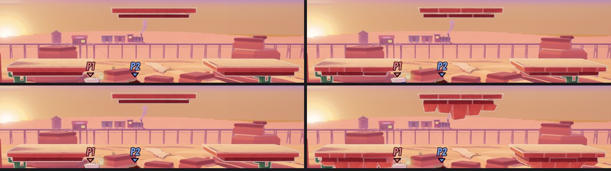
My pick: A. The platforms read as slabs of the same jointed sandstone as the front. B's hanging rock makes them read as pieces of mesa, but under the side platforms it hangs toward the fighters' heads (you passed on that rock in review 6 too). Honest note: it's a small change at play size, the joints showing as fine lines.
Painted peaks
First, the city's felt roof is built and the city re-lit (see its section below). Next, the meadow. Its two great peaks behind the fight were big flat facets, each one tone. This gives their faces the painted variation that worked on the play areas, at a mountain's scale: broad value patches and a warm-cool wander across each face, the faces turned up a touch warmer. Nothing is added.
| Option | What changes | The peaks' contrast |
|---|---|---|
| Today | 0.105 | |
| A · Broad patches | Large painted patches across the faces | 0.129 |
| B · Finer, stronger | Smaller, stronger patches | 0.119 |
The peaks at the match camera, today then A. P1's gap holds (0.013 today, 0.017 A, 0.015 B).
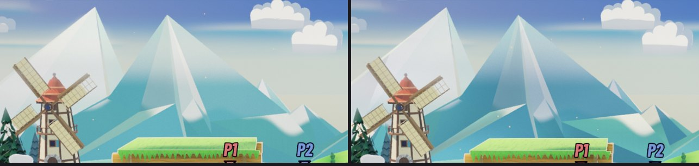
My pick: A. The peaks get mass: deeper teal flanks and lighter snow faces, painted rather than flat. B's smaller patches read as mottling. Honest notes: the depth haze takes back most of any change at that distance, so it needed a strong setting (the first, gentler try moved the contrast by 0.007). The rock bands I tried with it don't show at all.
The city's roof laid in felt
The roof the city's fighters stand on is the largest surface behind them, one flat pink plane whose few tar patches get lost under the lamp pools. This lays it in felt sheets running front to back. Each seam is a thin dark line with the pale lap of the next sheet beside it, all flush with the top so nothing changes where the fighters stand. Nothing is added.
| Option | What changes |
|---|---|
| A · Felt sheets | The sheets with their seams and laps |
| B · And gravel | A, with gravel specks scattered over the felt |
The roof at the match camera, today then A, all three unlit, as mocks are; the shipped roof gets its light bake back. P1's gap is the same with or without the felt (0.112 unlit; 0.131 lit today).
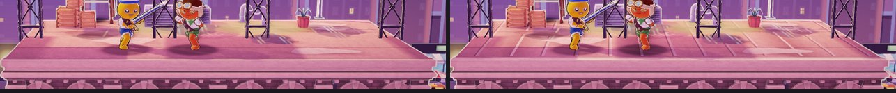
My pick: A. The seams run back in perspective and give the roof its scale and material at a glance. B's gravel doesn't show at play size. Honest note: the laps are a little bright. If they pull the eye in play, they can go a step darker.
The land is there; the most-seen surfaces are next
All five stages scored again after every new-art option shipped, with the same eight categories and the fighters' readability measured. The full write-up is in docs/art/stages/FIDELITY_REVIEW_12.md.
| Stage | Light | Surfaces | Play area | Background land | Sky | World | Cohesion | Readability | Mean | Review 11 |
|---|---|---|---|---|---|---|---|---|---|---|
| Beach | 4 | 4 | 4 | 4 | 4 | 5 | 4 | 4 | 4.1 | 4.1 |
| Canyon | 4 | 4 | 4 | 5 | 4 | 4 | 4 | 4 | 4.1 | 4.0 |
| City | 4 | 4 | 4 | 4 | 4 | 5 | 4 | 4 | 4.1 | 4.1 |
| Grove | 4 | 4 | 4 | 5 | 4 | 5 | 4 | 4 | 4.25 | 4.1 |
| Meadow | 4 | 4 | 4 | 5 | 4 | 5 | 4 | 4 | 4.25 | 4.25 |
| Mean | 4.0 | 4.0 | 4.0 | 4.6 | 4.0 | 4.8 | 4.0 | 4.0 | 4.18 | 4.13 |
Background land and world and life are at or near 5 everywhere. The canyon's gorge and the grove's valley lift their land to 5. The 4s left are the surfaces players see most, at the match camera: the big flat planes the fighters stand on and in front of, which the wide camera hides among the new art. Readability holds (P1's gap: meadow 0.013, grove 0.062, beach 0.177, canyon 0.041, city 0.131).
What still blocks 5, and the order
- The city's play roof: one flat pink plane behind the fighters. Laid in felt, mocked above.
- The meadow's mountains: the two great peaks are big flat pale facets. Give their faces broad painted value (lit and shaded flanks, snow thinning lower down), with no new shapes.
- The canyon's platforms: plain flat red slabs. Give their faces the front's sandstone beds and joints.
All three refine what exists.
Every stage today
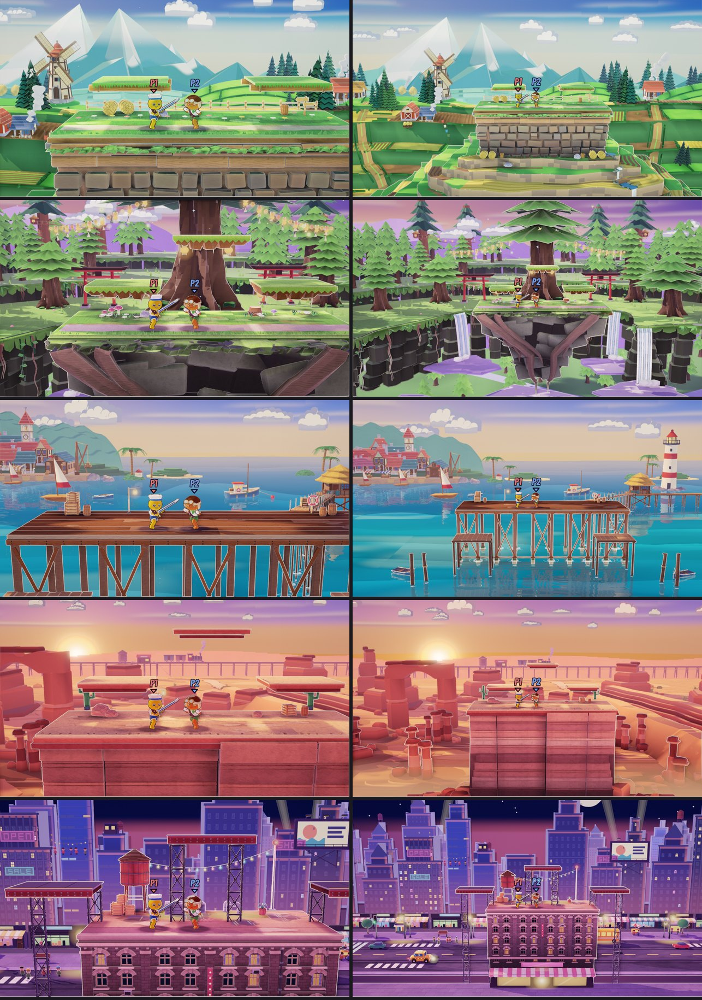
The islands over a valley
First, the city's street life is built (see its section below). Last of the approved new art, the riskiest: the grove's abyss opened to a valley below. The near abyss becomes pale banks of mist with gaps between them, one under each waterfall's foot and a broad one under the island, so the water and the rock still end in mist. Through the gaps there's a forest floor in the grove's own greens, with its pines at true size and a pale river winding across it.
| Option | What changes |
|---|---|
| A · Deep, under the mist | The valley far down (80 below) with today's layered mist sheets kept over it |
| B · Open valley | The valley nearer (50 below) and open: no layered mist sheets behind the banks |
The lower half at the wide camera (today, A on top; today, B below). P1's gap holds (0.061 today, 0.059 A, 0.055 B).
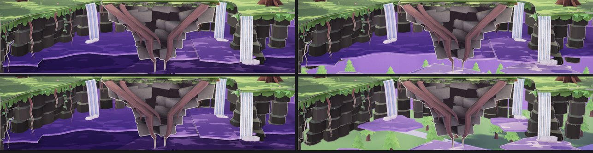
My pick: B. The islands now float over a forested valley with its river, the clearest change to the grove's lower third so far. Honest notes:
- A doesn't work. The cameras look down only a little, so a valley 80 below shows just in the frame's bottom band, as pine tips in the haze. That's the "trees standing in water" look from review 9.
- B's valley is 50 below, so it reads as below rather than far below.
- The side islands' rock columns now hang over the valley (as floating islands do), and the mist banks are flat pale pads.
- Shipping means rebuilding the grove's land and re-lighting. It adds about 62,000 triangles (140,000 to 202,000), right at the plan's budget of about 60,000 per stage, so I'd check frame time on the Fast tier before shipping.
A newsstand, a food cart and a bus stop
First, the beach's moored rowboats are built (see its section below). Next, the city. On the pavements, at true size, between the shopfronts and the kerb (read from the wide camera's depth): a green newsstand with its magazines racked under a flap awning on the left; a hot-food cart on the right, under a striped umbrella with a curl of steam; and beside it a bus stop with a lit panel, a bench and its sign at the kerb.
| Option | What changes |
|---|---|
| A · The street pieces | The newsstand, the cart and the bus stop |
| B · With people | A, with two people waiting at the stop and two buying at the cart |
The street's left (today, then A) on top and its right (today, then B) below, at the wide camera. The match camera sees only the street's edges. P1's gap holds (0.130 today, 0.131 A, 0.132 B).
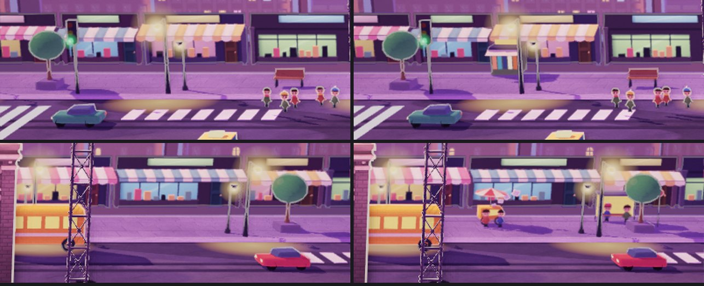
My pick: B. With people at them, the cart and the stop are in use, and the right pavement gets the life the left already has from the people crossing. Honest note: they're small at the wide camera, and the newsstand first came out cream, which read as a white box.
Rowboats at the mooring posts
First, the meadow's stream is built and the meadow re-lit (see its section below). Next, the beach. A rowboat lies behind each pair of the foreground's mooring posts, outside them and clear of the fight, its bow angled in to the outer post with a rope, rising and rolling on the swell. They're rowboat size, oars shipped.
| Option | What changes |
|---|---|
| A · Two boats | One rowboat at each pair of posts |
| B · Three, with nets | A, with a second boat rafted to the right one and nets heaped in them |
The left posts (today, then A) on top and the right posts (today, then B) below, at the wide camera. The match camera doesn't see them. P1's gap holds (0.181 today, 0.182 A, 0.180 B).
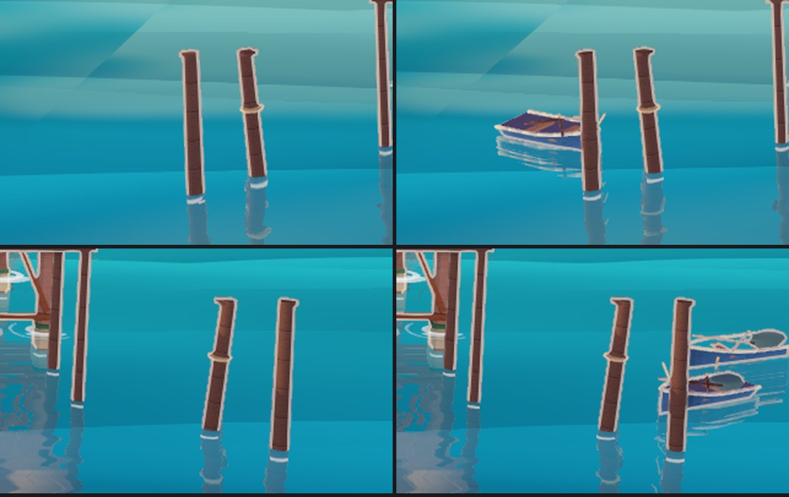
My pick: A. The posts finally hold something, and one boat each side frames the dock evenly. B's nets read as grey lumps, and its pair of boats makes the right corner busier than the left. Honest note: the mooring ropes are thin and hardly show. A first placement in front of the posts was cut by the frame's bottom corners.
A stream down the terraces
First, the canyon's deep gorge is built and the canyon re-lit (see its section below). Next, the meadow. A stream rises at the wall's foot right of the middle, crosses each terrace in a narrow winding channel with darker banks, and spills down each fieldstone wall in a little fall with a splash at its foot. Where a lane crosses it, a plank footbridge carries the lane over.
| Option | What changes |
|---|---|
| A · The stream | The channel, its falls and the footbridge |
| B · With its spring | A a little wider, with a spring pool at its head and wet stones along its banks |
The right of the terraced hill at the wide camera (today, A on top; today, B below). It sits on the hill's right flank, low in the wide frame; the match camera doesn't see it. P1's gap holds (0.018 today, 0.015 A, 0.014 B, measured on the meadow's standard box).
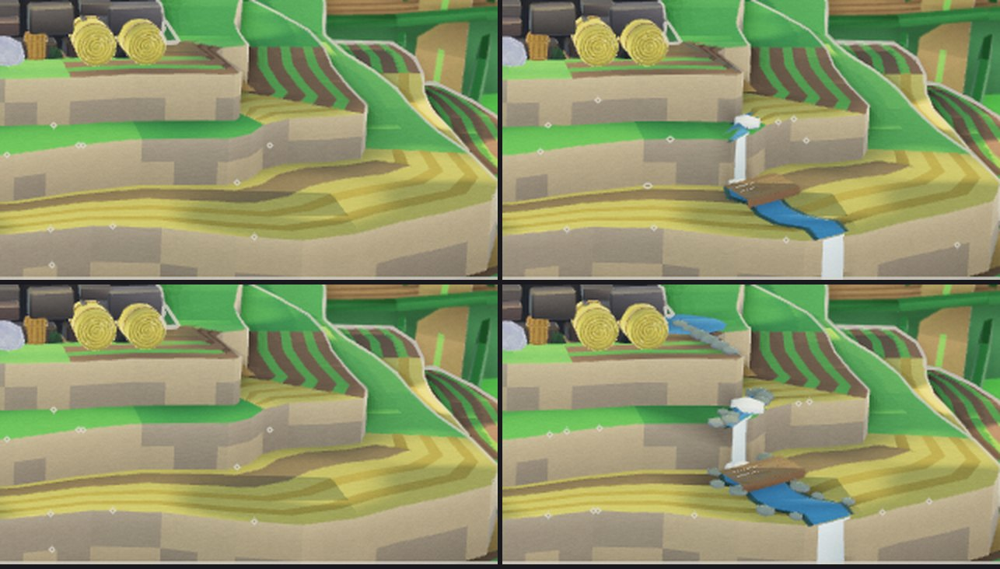
My pick: B. The pool says where the water comes from, and the stones seat the channel in the land. Honest notes: it's small at the wide camera, and its blue is the strongest colour at the foot of the frame. If it pulls the eye in play, I can soften it toward the sky's blue. Its falls are bright white strips.
The dry wash as a gorge
With your OK on the remaining new art, I'm taking the stages in this order: the canyon first (the one stage still at 4.0), then the meadow's stream, the beach's moored boats, the city's street life, and the grove's valley last (the riskiest). For the canyon, the dry wash that winds in from the far right becomes a real channel. Its bed is wider and strewn with pebbles, and each bank steps up in sandstone ledges in the strata's colours to a rim that slopes away into the floor's sand.
| Option | What changes |
|---|---|
| A · Shallow gorge | Three ledges 0.9 high each side |
| B · Deep gorge | Four ledges 1.3 high each side, fallen blocks in the bed |
The right of the stage at the wide camera (today, A on top; B, then B at the match camera below). The gorge starts at the nearer reach only, right of the fight. The region there gains contrast (0.126 to 0.147 A, 0.144 B), and P1's gap holds (0.043 today, 0.045 A, 0.046 B).
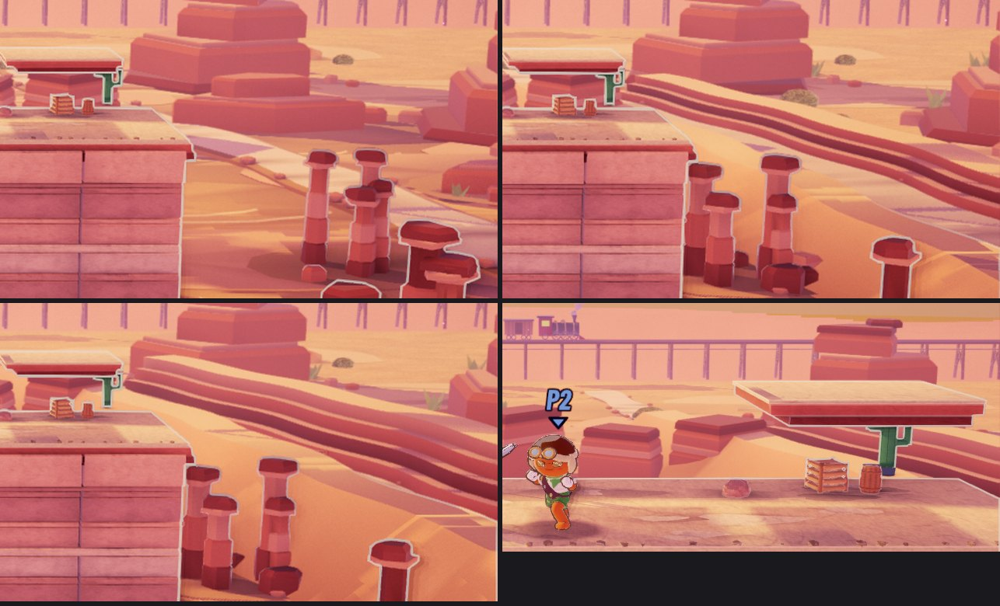
My pick: B. Its banks show their sandstone strata and read as a gorge cut through the floor. A's thin steps read as a trench. Honest notes: from this camera height you mostly see the far bank's stepped face, not into the bed, so the fallen blocks hardly show. The first try ran the gorge's whole length and stood its rim up as an embankment, with a pale rise right behind the fighters. Keeping the scatter clear of the banks moves the right-hand rock pillars a little. Shipping means rebuilding the canyon's land and re-lighting.
Depth in the grove's abyss
First, the beach's near sea is built (see its section below). Last of review 11's list, the grove. Its abyss was flat purple with soft blotches, and the nearest mist's front was one long wavy line across the whole frame. This refines the abyss and mist sheets that are there; nothing is added.
| Option | What changes |
|---|---|
| A · Stepped mist | The nearest mist's front broken into sheets 30 to 70 across, each further in or out and a little higher or lower, with its own cut edge; the abyss shaded deeper under the island and toward the frame's foot |
| B · And lit lips | A, with each sheet lighter at its cut edge and deeper behind it |
The abyss at the wide camera, left then right of the island (today, then A). The region under the island goes from value 0.28 to 0.26; the rest moves by 0.01 or 0.02. P1's gap holds (0.056 today, 0.061 A, 0.059 B).
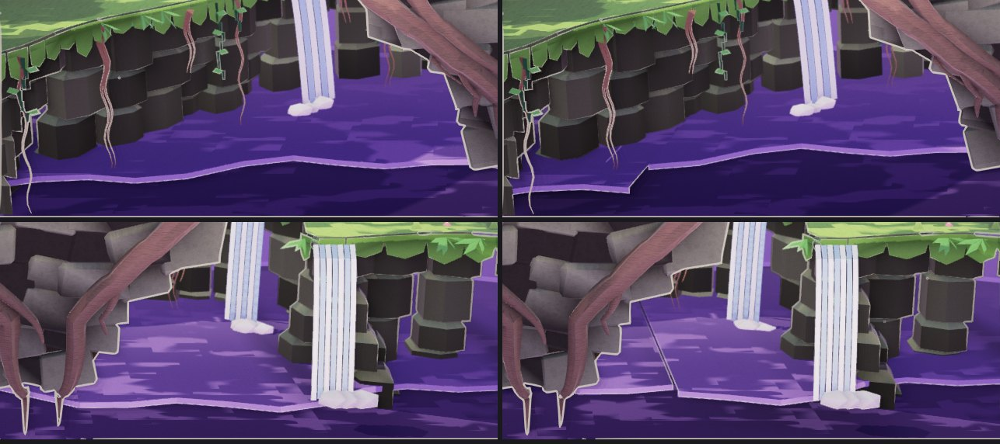
My pick: A. The mist reads as layered sheets at different depths, as the plan asked, instead of one line ruled across the frame. B can't be told from A at either camera. Honest note: it's a modest gain. The blotchy purple under the mist (its painted variation) stays, and shipping means rebuilding the grove's paper land and re-lighting the grove.
Deeper water at the frame's foot
First, the meadow's lanes are built in the farmyard's earth (see its section below). Next, the beach. Its near sea, the lower third of the wide frame, was one flat turquoise with pale streaks (the paper bands' lit lips). This changes the water's own paint only: deeper and cooler toward the frame's foot, so it frames the dock instead of glaring.
| Option | What changes | The foot's value (wide) |
|---|---|---|
| Today | 0.56 | |
| A · Deeper foot | The water deepening and cooling toward the frame's foot | 0.50 |
| B · And slow patches | A, with broad slow patches of deeper and lighter water there | 0.49 |
| C · Deep foot, calm lips | B, deeper, with the bands' pale lips softened toward the foot | 0.44 |
The lower half at the wide camera (today, C on top; B, then C at the match camera below). P1's gap holds (0.181 today, 0.182 A, 0.179 B, 0.176 C).
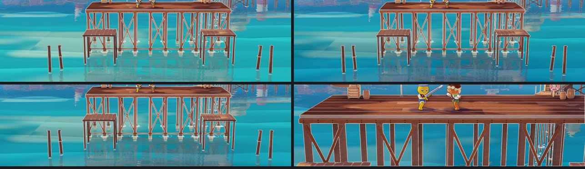
My pick: C. The water reads deeper and calmer toward you, and the dock stands out of it. A and B are hard to tell from today. Honest note: the game's tone curve takes back most of the water's change, so it needed a strong setting to show. It goes by the frame's height, because the water in front of the stage lies within a few units of the stage, so a depth-based fade never reached it. The pale bands further back are unchanged.
The meadow's lanes in earth, not cream
First, the canyon's jointed front is built and the canyon re-lit (see its section below). Next, the meadow. The lanes down its terraces are cream ribbons, the brightest thing in its lower third (value 0.84 against the fields' 0.53). This changes only their colour; nothing is added.
| Option | The lane | Its value (right lane, wide) |
|---|---|---|
| Today | Cream | 0.84 |
| A · Track dust | A pale warm dust | 0.79 |
| B · Trodden earth | A deeper tan | 0.74 |
| C · Farmyard earth | The farmyard's own brown earth | 0.67 |
The left lane past the farm and the right lane at the wide camera, today then C. P1's gap holds (0.012 today, 0.014 A and B, 0.018 C).
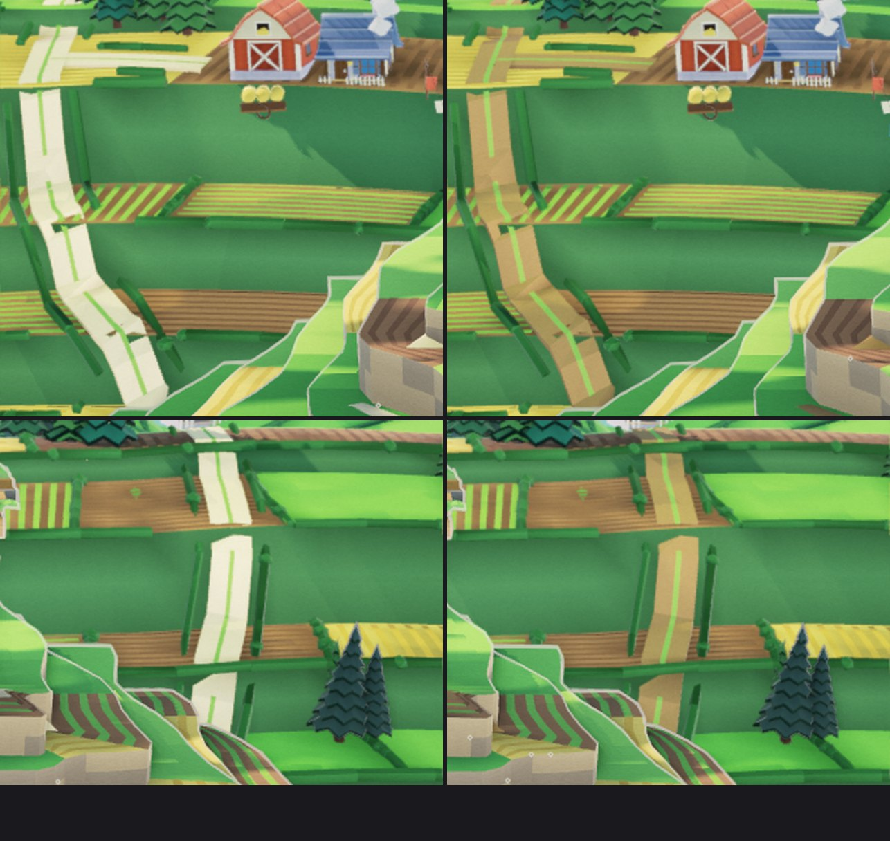
My pick: C. The lanes read as dirt farm tracks that belong to the land, in the same earth as the farmyard, and they stop pulling the eye. A and B are still pale stripes. Honest note: the lanes are still broken where they cross each terrace wall. Joining them is a change to the land model, left for later. The grass strip down their middle shows more against the earth.
The canyon's front as jointed rock
The canyon's front is a third of the wide frame and still its plainest part: long pale beds, each block its own length, so it reads as stacked boards. Sandstone cliffs are cut by vertical joints that run down through many beds, and they darken toward their foot. This refines the front's own blocks; nothing is added.
| Option | What changes |
|---|---|
| A · Jointed rock | Vertical joints 5 to 11 apart running top to bottom through every bed (a few beds bridge one), each column set a little in or out as a whole, the face darkening toward its foot |
| B · And stained columns | A, with some columns stained darker down their length, as weathered cliffs streak |
The front at the wide camera (today, A on top; B, then B at the match camera below). Its contrast rises from 0.067 to 0.090 at the match camera (0.091 to 0.110 wide), its value dips from 0.39 to 0.37, and P1's gap moves within noise (0.046 today, 0.042 A, 0.043 B).
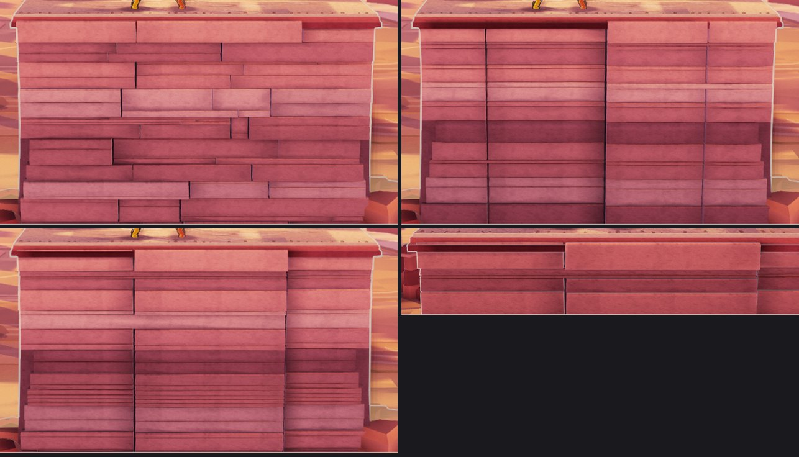
My pick: A. At the wide camera the face reads as a cliff split into tall columns rather than a stack of boards. B's stain is too faint to tell from A. Honest note: the beds still run across every column, so it's better, not yet a 5. A first try put the joints 2.4 to 5 apart, drawn per tier, and read as a brick wall. A thin shadow shows under the top lip where a column is set back. Shipping it means a re-light of the canyon.
World and life reaches 5, and what's left
All five stages scored again after the new art, with the same eight categories, the same regions and the fighters' readability measured. The full write-up is in docs/art/stages/FIDELITY_REVIEW_11.md.
| Stage | Light | Surfaces | Play area | Background land | Sky | World | Cohesion | Readability | Mean | Review 10 |
|---|---|---|---|---|---|---|---|---|---|---|
| Beach | 4 | 4 | 4 | 4 | 4 | 5 | 4 | 4 | 4.1 | 4.0 |
| Canyon | 4 | 4 | 4 | 4 | 4 | 4 | 4 | 4 | 4.0 | 4.0 |
| City | 4 | 4 | 4 | 4 | 4 | 5 | 4 | 4 | 4.1 | 4.0 |
| Grove | 4 | 4 | 4 | 4 | 4 | 5 | 4 | 4 | 4.1 | 4.0 |
| Meadow | 4 | 4 | 4 | 5 | 4 | 5 | 4 | 4 | 4.25 | 4.0 |
| Mean | 4.0 | 4.0 | 4.0 | 4.2 | 4.0 | 4.8 | 4.0 | 4.0 | 4.13 | 4.0 |
World and life is the first column at 5, on four stages: the meadow's farm, the grove's lit village and falls, the beach's working quay and the city's streets and roofs each read as a place in use. The canyon's railway and station are small and far, so it stays a 4. The meadow's terraced fields make its background land a 5. Readability holds: P1's gap is 0.012 to 0.017 on the meadow (the same as before its world change; review 10's 0.042 used the meadow's own box), 0.060 on the grove, 0.181 on the beach, 0.043 on the canyon and 0.131 on the city.
What still blocks 5, and the order
- The canyon's front: a third of the wide frame that reads as stacked boards, not rock. Mocked above.
- The meadow's lanes: cream-white ribbons with a green centre line, the brightest thing in its lower third, broken at each terrace wall. Give them the farm track's dust colour and join them.
- The beach's near sea: broad flat turquoise facets with pale streaks. Add value drift in the water, deeper toward the frame's foot.
- The grove's abyss: flat purple with soft blotches. Make it darker under the falls and the island, with the mist edge broken into sheets.
All four refine what exists, so none needs a new-art approval. Painted variation (the surfaces and light columns) and the fighters remain the wider gaps.
The weak spots, close (the canyon's front, the grove's abyss, the meadow's left lane, the beach's near sea, the city's pavement, the meadow's right lane):
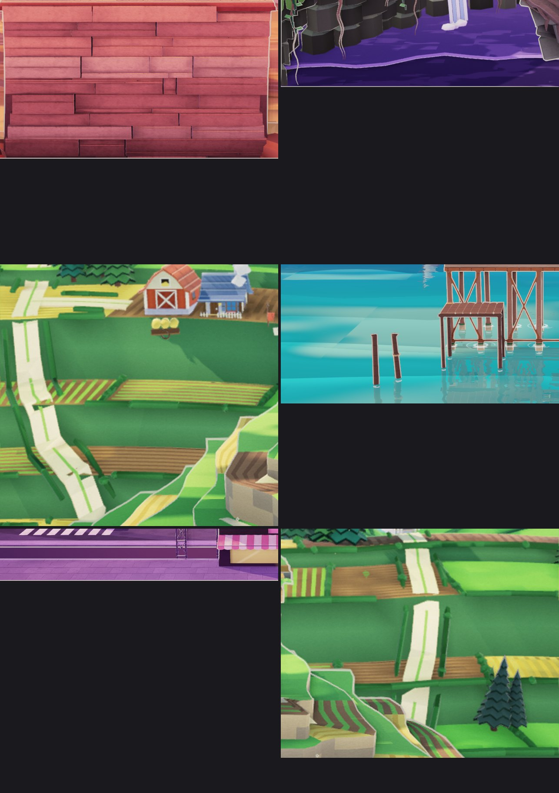
Every stage today
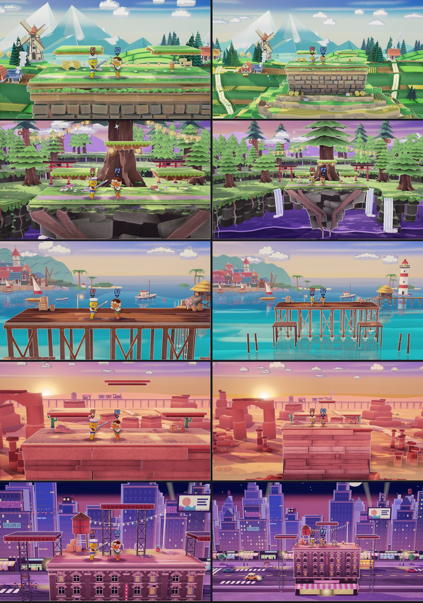
Honest note: the judge built the work. The 5s are where a wide still now holds its own beside the references for life, not for finish.
Life on the city's roofs
First, the beach's working quay is built (see its section below). Last, the city. Its street has its traffic and crossing, and one roof has its party and the billboard. The plan's rooftop life on the towers is what it lacks. The towers are built by code, so I read their real roofs from the wide camera's depth and put each thing on a roof that is there, at true size.
| Option | What changes |
|---|---|
| A · Water tanks | Wooden water tanks (stave barrels bound in hoops, cone caps, on legs) on three roofs: the near flat roof left of the stage, the top of the stepped tower on the right, and a middle-row tower on the left |
| B · And lit roofs | A, but the near flat roof gets a small penthouse with two lit windows and a rail, its tank beside it; and a rooftop garden (planters, a pergola, string lights) on a middle-row roof |
The left and right skyline at the wide camera: today, then B. P1's gap holds (0.134 today, 0.133 A, 0.135 B).
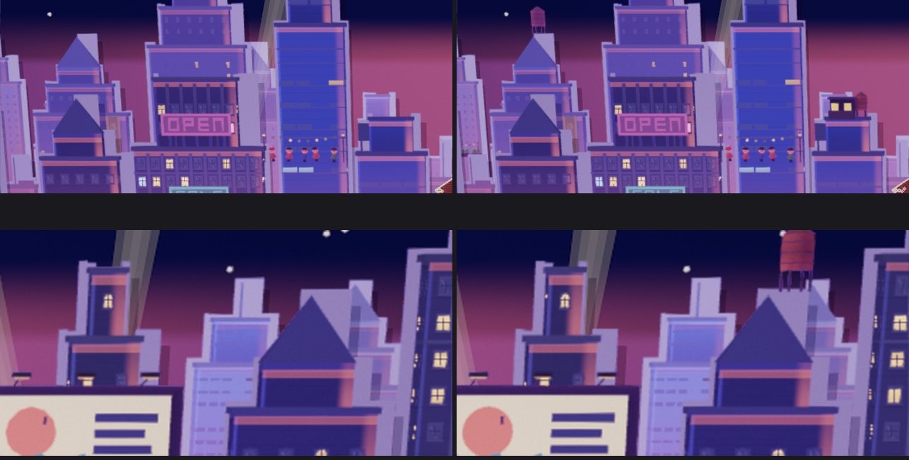
My pick: B. The tanks give the skyline the city's classic rooftop silhouette, and the penthouse's two lit windows add a home up there, visible at the match camera above the play roof's tank. Honest note: B's rooftop garden is too small and far to read at either camera. It costs nothing, but it adds nothing either.
A working quay
First, the canyon's halt is built (see its section below). Next, the beach. The town's quay already has its market stalls and the warehouse, so it gets the rest of what the plan named: a crane and nets drying.
| Option | What changes |
|---|---|
| A · Crane and net racks | A timber derrick crane on the quay's free east end, its jib swung out over the water with a pallet of crates slung from it; nets drying on racks between the stalls and the warehouse |
| B · Crane and nets on the wall | The same crane; the nets hung down the quay's face instead, a line of red floats along each top |
The quay at the wide camera (today, then A) on top, and at the match camera (today, then B) below. P1's gap holds (0.178 today, 0.177 A, 0.180 B).
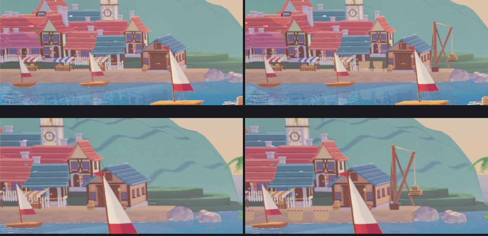
My pick: B. The crane gives the quay work to do, and the nets on the wall read as nets, with their floats, where A's racks sit behind the stalls as a pale patch. Honest note: the crane is the tallest thing on the quay and shows clearly at the match camera's top left. It first read as a thin grey mast with its jib foreshortened, and its load as a yellow ball. The nets were first in the net teal, which went grey in the air.
A halt on the far railway
First, the grove's lifted village is built (see its section below). Next, the canyon. Its far trestle, train and water tower are already there, so it gets what the plan named that it lacks: a depot, and a dust trail on a road.
| Option | What changes |
|---|---|
| A · The halt | A little station at the water tower, at the trestle's deck height: a plank platform on stilts, a station house with a red gable roof, a lit window and a signboard, a stair down to the floor, crates and a bench |
| B · And a dusty road | A, with a dirt road from the halt out to the horizon, and a truck coming in on it, raising its dust |
The tower and the halt at the wide camera: today and A on top, today and B below. P1's gap holds (0.043 today, 0.045 A, 0.044 B).
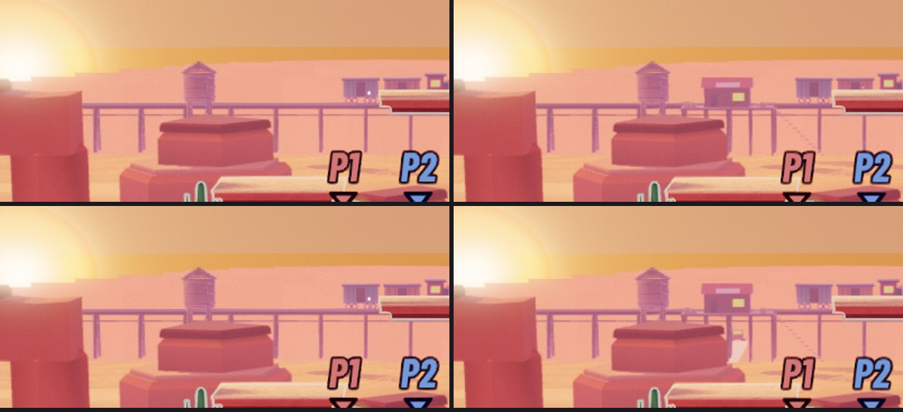
My pick: A. The halt gives the train somewhere to stop: the tower, the station and the train read together as one small far place. In B, the road and the truck stay hidden behind the near butte, and the dust shows only as a pale wisp just over the left platform, close to P1's tag at the match camera.
The grove's tree village, out of hiding
First, the meadow's far farm life is built (see its section below). Next, the grove. Its far tree village (huts with lit windows on rings of planks round four great trunks, rope bridges between them) has been there since the 21 October world round. But it sits low on the trunks, and since the modelled forest went in, the nearer pines hide it: today only a scrap of one bridge shows. So the grove needs no new things, only its village where it can be seen.
| Option | What changes |
|---|---|
| A · Lifted village | Each hut lifted to the open trunk between the pine tops and its tree's crown, on the trunk's outer side where the sky is open; the bridges and ladders follow |
| B · And lit bridges | A, with three lit lanterns hung along each rope bridge |
The far left and far right at the wide camera (today, then B). The village is far off the match camera's edges, so the fight doesn't change: P1's gap holds (0.055 today, 0.063 to 0.064 with the options, within the demo's pose noise).
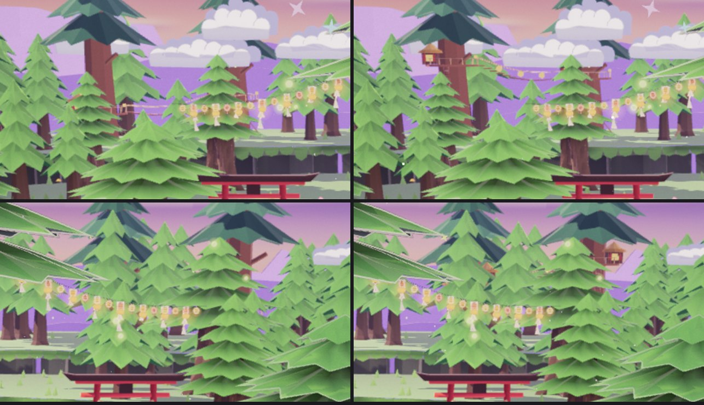
My pick: B. The lit huts and the lanterns strung across the gap make a village that's lived in, small and far, as the plan asked. Honest note: the right hut was first hidden inside its tree's crown, then behind a near pine, so the huts now face outward. The left bridge reads best; the right one is mostly behind the pines.
Far farm life on the meadow
First, step 4 is built: the city's storefronts (see its section below). Then world detail, stage by stage, starting with the meadow. A lot of the plan's world detail already exists from the 21 October world-building round (the meadow's chimney smoke, washing and scarecrow; the grove's far tree village; the canyon's railway and water tower; the city's traffic and rooftop party). So each stage gets only what's missing, at true size and far back.
For the meadow: a hay cart stands in the farmyard below the barn, and a bonfire's smoke rises from a far field past the windmill. Rebuilding the world model also re-seats the scarecrow on the new terraced ground (since the terraces, it was buried).
The farmyard (today, then with the cart), and the far field past the windmill (today, then with the bonfire's smoke):
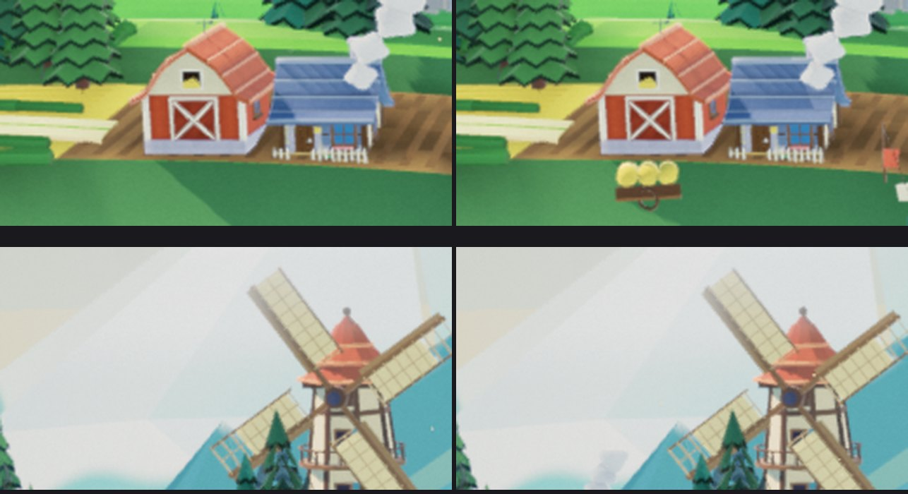
My pick: ship it. It's small and quiet, as far life should be, and the scarecrow is back. Honest note: the bonfire is barely visible at play size, and a first spot right of the stage merged into the cottage's chimney smoke. The cart first stood hidden behind the barn, then on the slope below it.
Storefronts with depth
First, step 3 is built: the beach has its sand bars (see its section below). Then the city's shops along the street. Each window and door is now set back in a recess, with its reveals and a soffit, under a fascia carrying the sign in relief. Goods of different heights stand in the lit windows, and the awnings hang at their own heights and reaches, with one shop in four left bare.
| Option | What changes |
|---|---|
| A · Recessed shopfronts | The recesses, the goods, the varied awnings and the signs in relief |
| B · And blade signs | A, with a lit blade sign standing out from every other shop |
The street's left stretch at the wide camera (today, A, B), then B at the match camera. The shops' contrast rises from 0.206 to 0.220, and P1's gap holds (0.127 to 0.132).
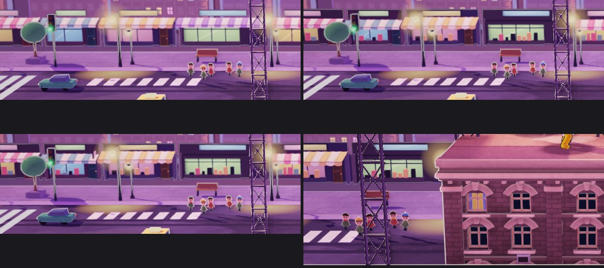
My pick: A. The goods in the windows and the varied awnings make each shop its own, and the street reads as a lived-in row. B's blade signs barely show at this distance, so they would only add clutter. Code-built, no light bake.
Sand bars under the dock
First, step 2 is built: the meadow's hill is terraced farmland with a lane (see its section below). Then the beach. The water under and around the dock was one even turquoise. Now it has shallows: long soft sand bars seen through clear water, a slightly deeper rim round each where the bottom drops away, fading out as the sea deepens behind the dock.
| Option | What changes |
|---|---|
| A · Sand bars | The sand bars and their rims |
| B · And rocks | A, with a few rocks on the bottom seen through the water |
The water at the wide camera: today, A, B. The sea's contrast rises from 0.084 to 0.099 (A) and 0.100 (B), and P1's gap to the ground stays near 0.17 (the dock is what stands behind the fighters).
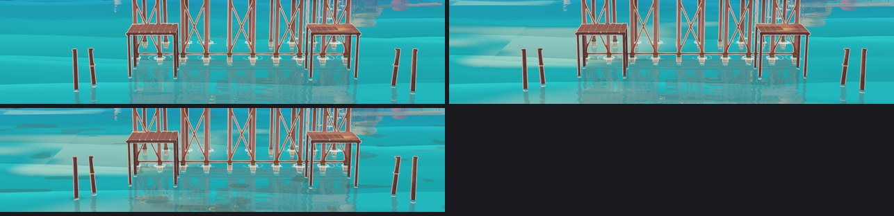
My pick: A. The sand bars read as shallow water at once and keep the sea calm. The rocks add a little texture but read as dark spots at play size (a first, denser set looked like blotches). Both are in the sea's shader, so they cost nothing to draw.
The hill under the wall as terraced farmland
First, step 1 is built: the grove's three falls and the canyon's mesa foot with five hoodoo clusters (see their sections below). Then the meadow. The plain green hill under the stage's wall is now stepped into farm terraces. Each shelf is laid in the valley's own fields (pasture greens, wheat and ploughed rows), held by a low wall of the stage wall's own warm fieldstone, so the hill joins the farmland around it.
| Option | What changes |
|---|---|
| A · Terraced fields | The fields and the fieldstone walls |
| B · And a lane | A, with a pale lane along each shelf switching back from side to side and ramping down to the next |
The hill at the wide camera: today, A, B. P1's gap to the ground holds at 0.051 to 0.052 (only the hill below changes).
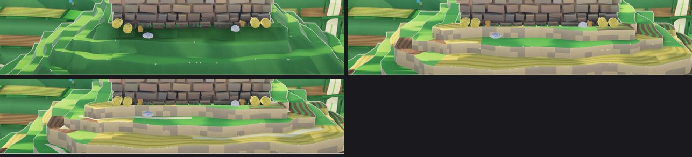
My pick: B. The lane walks the eye down the terraces and ties them to the valley's lanes. The bottom of the frame goes from a plain green mound (value 0.39) to sunlit fields (0.62). A first build left gaps in the walls' second course and outlined every block, and both are fixed. Shown before the light bake.
Waterfalls into the mist, and longer roots
The first approved new art. Waterfalls pour off the terraces' lips into the abyss beside the island, each a sheet of cut paper strips in two pale blues arcing off the edge, with spray heaped where they meet the mist. The mist is rebuilt in three layers that pale with depth, and the roots hanging from the terraces' lips grow long into the abyss.
| Option | What changes | P1's gap (today 0.059) |
|---|---|---|
| A · Two falls | Two falls, both to the right of the island | 0.064 |
| B · Three falls | Three: two to the right, one to the left, framing the island | 0.062 |
The abyss at the wide camera: today, A, B.
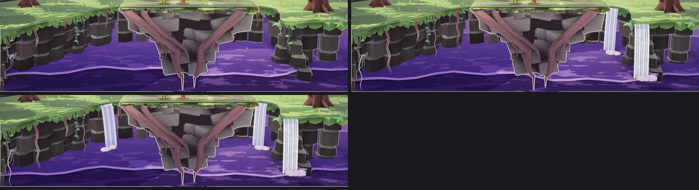
My pick: B. Falls on both sides frame the island and give the abyss its depth. They're static paper for now; a slow movement down the strips can follow once the look is picked. A first placement put them too far out, off the wide frame. Shown before the light bake.
The mesa standing on the ground, and hoodoos on the floor
Either side of the stage's mesa, a fan of scree a step deeper than the sand, with fallen sandstone blocks on it, the biggest against the wall. Across the floor either side, clusters of hoodoos at true size: columns of the mesa's own strata narrowing up to a wider cap stone, with boulders round them and their sunset shade.
| Option | What changes | P1's gap (today 0.036) |
|---|---|---|
| A · Three clusters | The talus fans, and three hoodoo clusters | 0.039 |
| B · Five clusters | The talus fans, and five clusters, more of the floor filled | 0.038 |
Close at the wide camera: the right of the mesa (today, A), then the left (today, B).
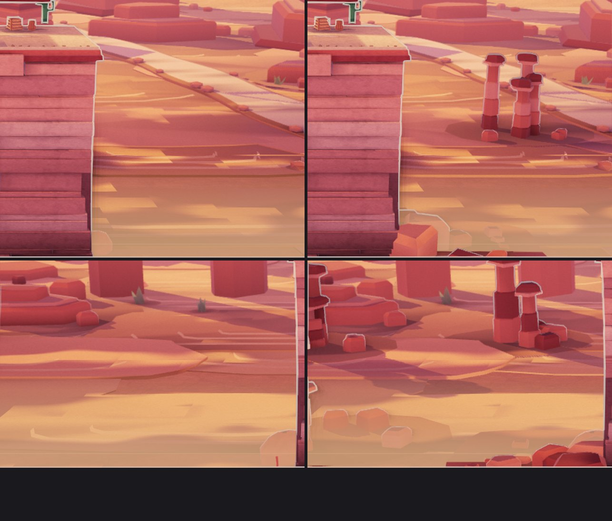
My pick: B. The floor either side of the mesa finally has forms and shadows, and the mesa sits on its own rubble. About 1,000 triangles more than A, and the whole canyon background stays under 25,000. Shown before the light bake.
What new art would take the stages to 5
Review 10 put every stage at a clear 4, and the refinements are now moving the measurements by a hundredth or two. This is the new art that could lift each stage, as options. Nothing is built until you approve it. Each approved option then gets the usual round: mocks at both cameras, your pick, then build. The full plan is in docs/art/stages/NEW_ART_PLAN.md.
Every option keeps your rules: no animals; world details far back at true size; land connected and every tree seated; nothing new near the fight (the fighters' contrast measured on every mock); one stage at a time; paper-style Blender pieces; about 60,000 triangles per stage at most.
The target is the plainest third of every wide frame (the meadow's bare hill, the grove's flat abyss, the canyon's open sand, the water under the dock, the city's street front), and then life in the middle distance.
Lower thirds, by stage (my pick in bold)
| Stage | Options | Effort |
|---|---|---|
| Meadow | M1 Terraced fields: the hill under the wall stepped into farm terraces held by low fieldstone walls, crop rows, a lane switchbacking down into the valley's farmland · M2 a stream from a spring under the wall with a footbridge · M3 a belt of pines and boulders at the hill's foot | 1 session |
| Grove | G1 Falls into the mist: two or three waterfalls off the terraces' lips into the abyss, spray lifting into mist rebuilt as three thickening layers, with G3: the neighbour terraces' roots and hanging stone grown long into the mist · G2 the abyss opened to a deep valley floor far below (bold; risks reading as trees in water again) | 1.5 to 2 sessions |
| Canyon | C3 The mesa's foot: a talus fan of fallen sandstone blocks and scree, so the mesa stands on the ground, with C2: hoodoo clusters and boulder fields with long sunset shadows · C1 a dry river gorge cut across the floor (the boldest) | 1.5 sessions |
| Beach | B1 The shallows: sand bars and rocks seen through clear water under and around the dock, the sea deepening past them · B2 two rowboats tied to the posts | 1 session |
| City | Ci1 Storefronts with depth: recessed shopfronts with lit displays, doorways, awnings at different heights, signs in relief · Ci2 a newsstand, a food cart and a bus stop on the pavements | 1.5 sessions |
World detail in the middle distance (small, far, slow, true size)
| Stage | What |
|---|---|
| Meadow | A farmyard's working life far off: a cart on the lane, washing on a line, a bonfire's smoke in a field |
| Grove | Far treehouses and rope bridges in the giant trees, lanterns lit, deep in the haze |
| Canyon | A water tower and a small depot by the far railway, a dust trail on a road |
| Beach | The harbour town's quay life: stalls, nets drying, a crane |
| City | Rooftop life on the middle towers: water tanks, lit penthouse windows, a rooftop garden |
Suggested order
- The grove's falls (G1 + G3) and the canyon's mesa foot (C3 + C2), the two plainest lower thirds.
- The meadow's terraced fields (M1).
- The beach's shallows (B1) and the city's storefronts (Ci1).
- World detail, stage by stage.
About 8 to 10 sessions for the recommended set. Approve all of it, some of it, or other options from the tables. The fighters, half of every still, stay with the character and animation sessions.
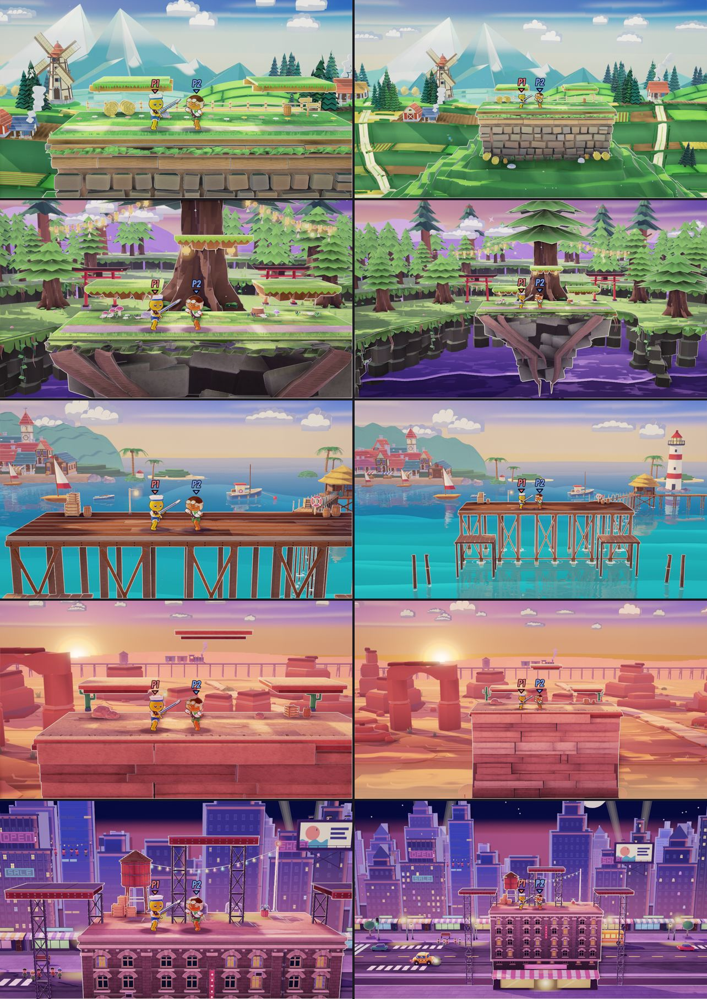
The meadow's hill, the grove's abyss, the canyon's floor: a finding
First, the grove's play area has its painted variation now (see its section below). Then review 10's items 2 to 4, the plainest third of each wide frame. All three were tried with the same painted variation, laid on the background land's own surfaces: A broad, B finer and stronger.
| Where | Contrast today → A → B | Verdict |
|---|---|---|
| The meadow's hill under the wall | 0.104 → 0.110 → 0.113 | A small gain: faint mottling across the plain green |
| The grove's abyss and its mist | 0.134 → 0.136 → 0.135 | No change: the mist already has a mottled print |
| The canyon's floor | 0.124 → 0.119 → 0.126 | No change: the sand sheets already carry ripples and shading |
Also: the small white specks on the meadow's hill aren't scenery. They move on every capture, even with the world model, props and pollen turned off. They're most likely flying fragments of the demo fight's sword effects caught by the paper outline, so they never show in a still of the stage itself.
The meadow's hill (today, A, B), then the grove's abyss and the canyon's floor (today left, B right):
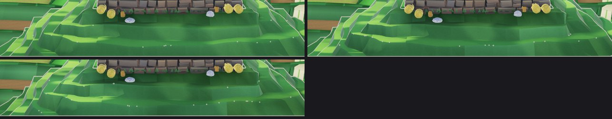
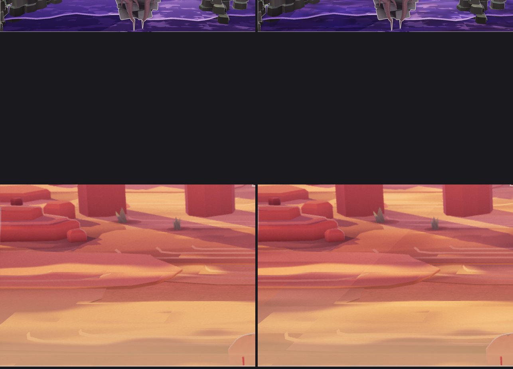
My pick: B on the meadow's hill only, a small honest gain; leave the grove and the canyon. The bigger point: after review 10's items, this look is at its ceiling within your refine-not-add rule. Every column is a clear 4, and the last levers (light, shade, paint) now move the measurements by a hundredth or two. A 5 would need new art: a redesigned lower third (new land forms, a new abyss), more world detail, or the fighters' own finish.
The meadow's painted variation, stage by stage
First, the meadow's play area has its painted variation now (see its section below). Then the same setting, play area only, tried on each of the other four stages, with the play top and P1's value gap to the ground measured at the match camera.
| Stage | Play top today → with it | P1's gap to the ground | Verdict |
|---|---|---|---|
| Grove | contrast 0.094 → 0.105 | 0.047 → 0.064 | Gains: soft lighter and deeper patches across the lawn, and the fighters stand out more on the stage where they stood out least |
| Canyon | value 0.62 → 0.57, contrast 0.101 → 0.087 | 0.040 → 0.053 | Worse: the sand already has drifts and cloud shade; it only goes darker and flatter |
| Beach | contrast 0.131 → 0.128 | 0.173 → 0.187 | No gain: the dock's boards already vary board by board |
| City | value 0.54 → 0.52, contrast 0.133 → 0.129 | 0.133 → 0.149 | No gain: the roof's tar patches already do this |
Close at the match camera, today left and with it right: the canyon, the beach, the city, the grove.
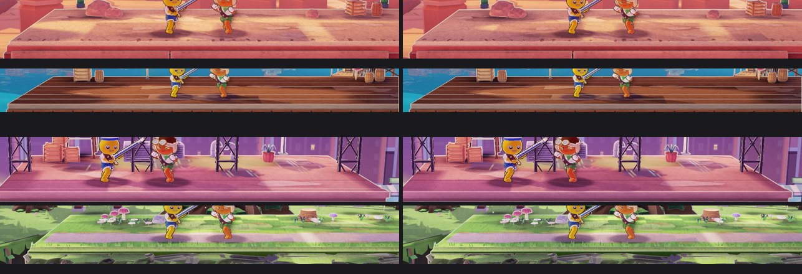
My pick: the grove only. It works where a top was one flat colour (the meadow's and the grove's lawns) and not where the surface already varies (sand drifts, boards, tar patches).
Painted variation on the meadow: works on the lawn, not on the wall
Review 10's main lever: broad painted drift across a surface, as the references have, in the surfaces' own paint rather than the light. This means large soft patches a little lighter and darker, a slow warm-to-cool colour wander, and tops a touch warmer than walls. It's tried on the meadow only, as a pilot.
| Option | Where | Lawn contrast (today 0.073) | Front (today value 0.45, saturation 0.29) |
|---|---|---|---|
| A · Everywhere | The lawn, the platforms and the whole front | 0.096 | 0.42, 0.26 (darker and greyer) |
| C · Play area only | The lawn and platforms; the front left as it is | 0.096 | unchanged |
The finding: on the lawn it's the first change in three rounds that measurably adds finish: its contrast rises by a third, as soft sunlit and deeper patches drift across it. On the front it only made the wall darker and greyer, because its many small stones and logs already vary. P1's gap to the ground holds (0.038 today, 0.036 with C).
Close at the match camera: today, A, C.
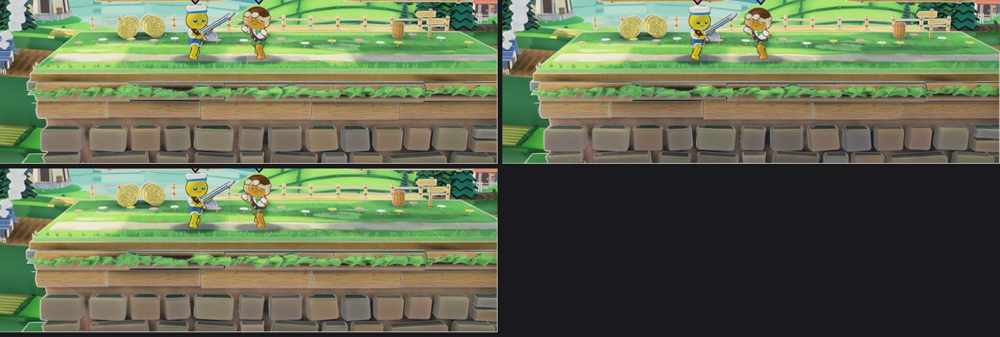
My pick: C, and if you like it, take it stage by stage to the other play areas, the big flat tops (the canyon's sand, the grove's lawn, the city's roof, the beach's deck). Honest note: it's subtle at play size, a third more contrast on the lawn rather than a new look.
A clear 4 everywhere, and what 5 needs
A fresh analysis of all five stages after review 9 and the deeper contact shade, with the same eight categories, the same regions and the fighters' readability measured. The full write-up is in docs/art/stages/FIDELITY_REVIEW_10.md.
| Stage | Light | Surfaces | Play area | Background land | Sky | World | Cohesion | Readability | Mean | Review 9 |
|---|---|---|---|---|---|---|---|---|---|---|
| Beach | 4 | 4 | 4 | 4 | 4 | 4 | 4 | 4 | 4.0 | 4.0 |
| Canyon | 4 | 4 | 4 | 4 | 4 | 4 | 4 | 4 | 4.0 | 3.9 |
| City | 4 | 4 | 4 | 4 | 4 | 4 | 4 | 4 | 4.0 | 4.0 |
| Grove | 4 | 4 | 4 | 4 | 4 | 4 | 4 | 4 | 4.0 | 4.0 |
| Meadow | 4 | 4 | 4 | 4 | 4 | 4 | 4 | 4 | 4.0 | 4.0 |
| Mean | 4.0 | 4.0 | 4.0 | 4.0 | 4.0 | 4.0 | 4.0 | 4.0 | 4.0 | 3.98 |
Every column is a clear 4 on every stage, and nothing is a defect. The canyon's step back is closed. Readability holds: P1's value gap to the ground is 0.042 on the meadow, 0.040 on the canyon, 0.171 on the beach, 0.126 on the city and 0.049 on the grove. No column is a 5. What's left isn't wrong; it's finish the references have and we don't.
What still blocks 5, and the order
- Painted variation in the surfaces (a pilot on the meadow first): most surfaces are one flat colour times a grey print. The references paint broad value and hue drift across a surface, lighter and warmer toward the light, deeper and cooler going down, a slow colour wander along a wall. The last two reviews showed the light can't add this, so it has to be in the surfaces' own paint. This is the one item with a real chance at surfaces and light 5.
- The meadow's hill under the wall: a plain green mound with stray white specks at the wide camera. Give it the lawn's own print and finish, and size or remove the specks.
- The grove's abyss: a flat purple band. Add depth in its mist, darker toward the bottom, with the second layer reading behind the first.
- The canyon's floor and front at the wide camera: after item 1, the same painted drift on the front, and broader shading on the floor.
The weak spots, close (the meadow's hill, the canyon's floor, the grove's abyss, the city's middle towers, the canyon's sky, the city's facade):
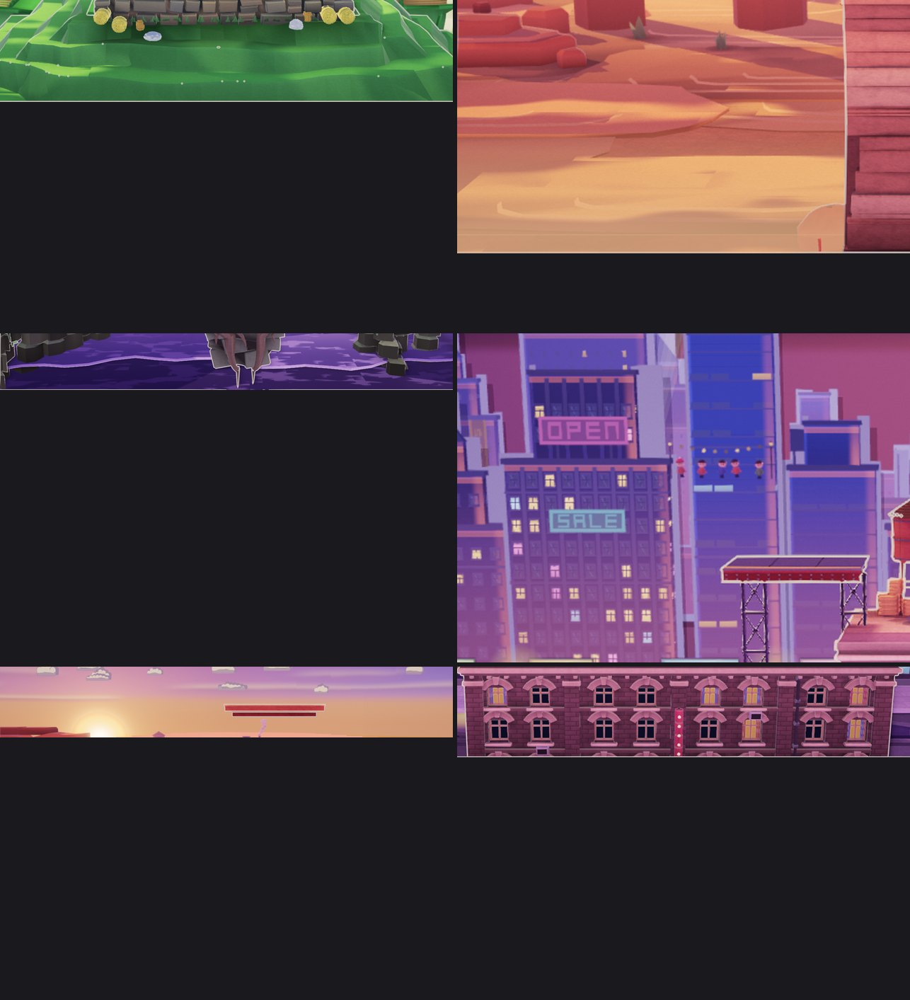
Every stage today
Honest note: without item 1 the ceiling for this look is a strong 4. Items 2 to 4 polish the wide camera; the fighters, half of every still, are the character and animation sessions' work.
Deeper contact shade on every stage
Review 9 found that the scenery's light lives in its baked shading, not in the light's shadow colour. This round refines that bake: the shade each stage's pieces take where they meet (under the turf lips, at the foot of the walls, round the props and posts) is deeper and reaches further. Nothing new is added; only the existing shade changes.
| Option | The bake |
|---|---|
| Today | Shade reaching 2.5 units, curve 2.5, never darker than 0.45. |
| A · Deeper | Reach 3.5, curve 3.2, floor 0.36. |
| B · Deepest | Reach 4.5, curve 4.0, floor 0.28. |
Close at the match camera, today left and B right: the meadow's turf lip over the logs, the canyon top's edge, the grove's lip.
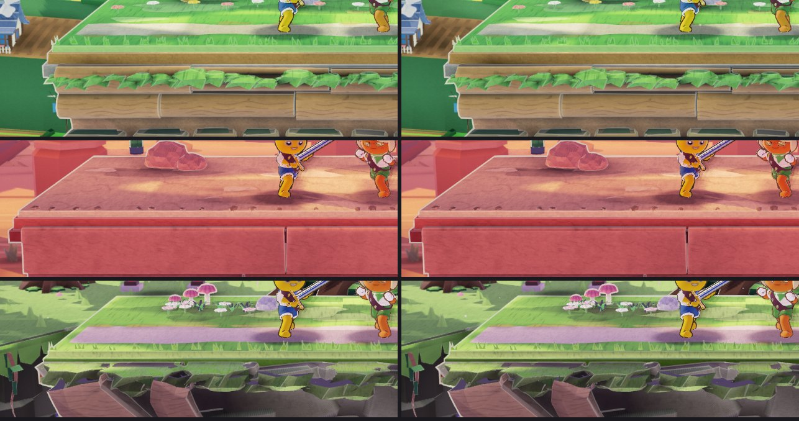
My pick: B. It's subtle but real: things sit into each other instead of resting on top. The fighters aren't baked, so they're untouched; P1's gap to the ground holds or grows a little (the grove 0.041 to 0.048, the city 0.121 to 0.131). Honest note: the measured regions move within 0.01, because this shade is local.
Depth in the day skies
Open since review 8: the day skies have one band of clouds, which reads flat. This adds a farther layer behind the furthest land: smaller clouds, paler toward the horizon's colour, just above it where distance puts them. The meadow, the canyon and the grove get it; the beach already has its horizon bank. It does add clouds, so it's your call under your refine-not-add rule.
| Option | What changes |
|---|---|
| A · Thin layer | Six far clouds, small, 42% toward the horizon's colour. |
| B · Fuller layer | Ten, a little larger, 30% toward the horizon. |
Wide skies, today left and B right: the meadow, the grove, the canyon:
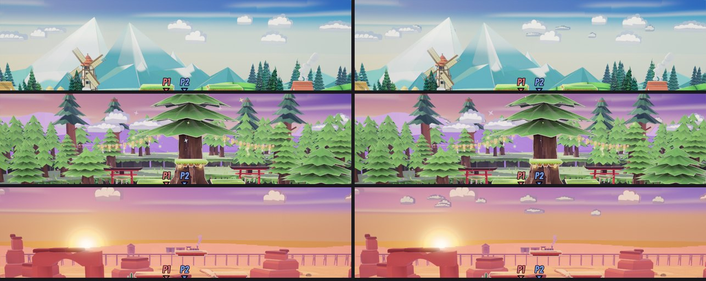
My pick: B on the canyon only. Its sky had two clouds, and the far layer gives it real depth. On the meadow it adds little over its own eleven, and on the grove the trees hide it. A first try tinted them toward the sky's middle blue, and they read as blue blots.
Deeper shade: tried three ways, and a finding
First, item 6 is built: the city's street is a worn road with the lamps' light on it (see its section below). Then the last item, the light at 5. The strong key gave the fighters a shadow side, but the scenery's contrast barely moved. So this round tried deepening the painted shade itself, everywhere, with the fighters' readability measured.
| Option | What changes | The grove fighter's value gap (today 0.042) |
|---|---|---|
| A · Deeper | Shade colours 15% darker, turned 40% further toward each stage's shadow hue, the scenery's shade side 15% deeper. | 0.030 |
| B · Much deeper | The same at 28%, 80% and 28%. | 0.016 |
| C · Deeper, sun further round | A, with the sun swung 22° further round behind the stage, to turn the fronts into shade under lit tops. | 0.030 |
The finding: none of them moves the scenery measurably. The stage fronts, tops and middle distance hold their value and contrast within 0.01 on every stage, even with the sun moved. What changes is the few faces already in shade (tree trunks, posts, undersides) and the fighters. Their shade deepens with the scene's, and on the grove that brings P1 to within 0.016 of the ground in B. The scenery's value lives in its baked shading, its prints and the paper finish, not in the light's shade colour.
Close (the beach above, the grove below; today, A, B, C):
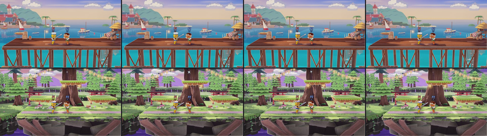
My pick: keep today. None of the three buys visible depth in the scenery, and all of them narrow the grove's fighter-to-ground gap. Light at 5 would have to come through the scenery's own baked shading (deeper occlusion in the light bake, darker undersides in the models), which is a different, per-stage pass.
A road you can read from the wide camera
First, item 5 is built: the canyon's cacti are ribbed now (see its section below). Then the city. At the wide camera its street was flat bands of purple, the one plain stretch on the stage. It already has a painted asphalt, paving, kerbs, a centre line and crossings, but the road was the same purple as everything round it.
| Option | What changes |
|---|---|
| A · Worn road | The road a step lighter and greyer than the purple round it (value 0.34 to 0.38, saturation 0.40 to 0.34), its patches stronger, and the lanes worn darker in two tyre tracks each. |
| B · And lamp light | A with each street lamp's warm light pooled on the road and pavement under it, as the string lights pool on the roof. |
The road's left stretch, wide: today, A, B, then B at the match camera:
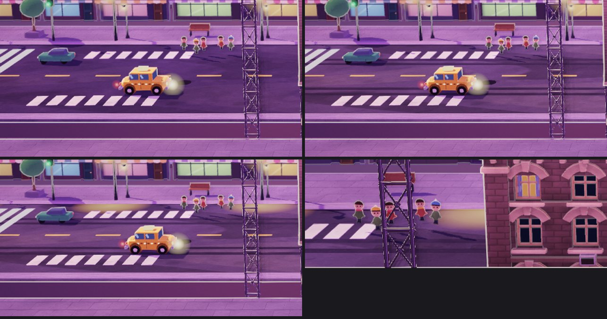
My pick: B. The road separates from the pavements, and the lamps finally light something below them. Honest note: both are modest steps; at the wide camera the street is a small strip of the frame.
Rolled coils, or a ribbed cactus
First, item 4 is built: the grove's abyss is just mist now, and its terraces are in the island's stone (see its section below). Then the canyon's cacti, which are your pick from 21 October: rolled paper coils stacked into a cactus. Under the platforms at play size, the coils read as green springs. The other design from that round is a ribbed cactus: a smooth trunk with pressed rib lines and two arms. It's the same paper kit, with only the cactus swapped, so every cactus in the canyon changes together.
| Option | What changes |
|---|---|
| Today · Rolled coils | Your pick from 21 October, kept as is. |
| A · Ribbed cactus | The ribbed design in its place: a saguaro's outline at a glance. |
Close at the match camera (today left, A right: under the left platform, under the right one), then the wide camera:
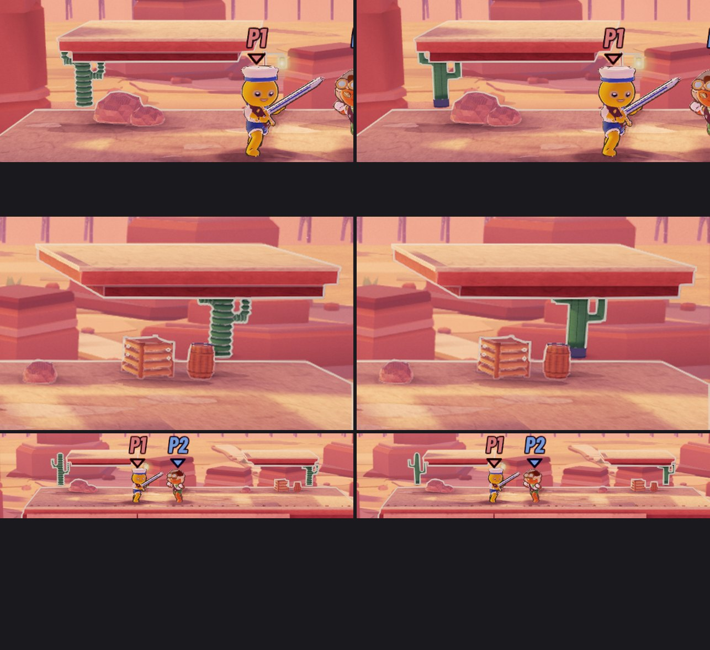
My pick: A. It reads as a cactus at once, and still as paper from its pressed ribs. The dark band at its foot is the stage top's violet shadow falling across it; on the coils the same shadow hides among the rolls.
One rock for the grove, and no trees in the water
First, item 3 is built: the beach's rings vary from post to post and its clouds sit in two groups (see its section below). Then the grove. In the abyss, the tops of a misty valley's pines stood up through the purple near the chasm and read as pale blue trees growing in water. Around them, the terraces' rock was a deep teal in hex-like blocks, while the island the fight stands on is grey-green stone: two kinds of rock side by side.
| Option | What changes |
|---|---|
| A · One rock, no trees | The valley's pines taken out (the mist kept), and the terraces' rock in the island's own stone, kept deep so the fighters still stand out in front of it. |
| B · Halfway | Only a few pines left far back in the valley (behind 80 units), and the terraces' rock turned partway, to a blue-grey. |
The abyss up close, wide: today, A, B:
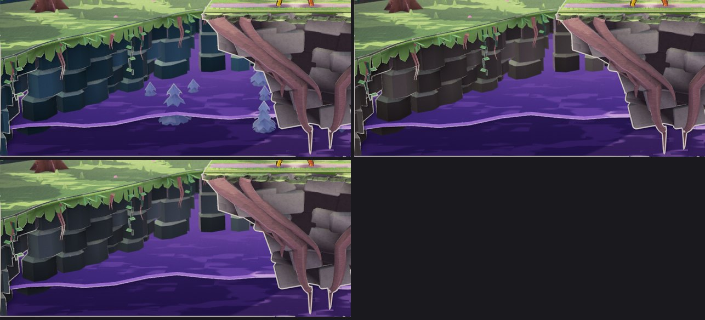
My pick: A. The whole grove reads as one place of stone and moss, and the abyss is just mist. P1's value gap to the ground holds at 0.04 in all three. It's also lighter: 134,000 triangles, down from 155,000. Shown before the light bake, today's included.
Softer rings in the water, clouds in banks
First, item 2 is built: the meadow's wall has larger, deeper stones and its foot is tidied (see its section below). Then the beach, with two separate picks. Under the dock every post had the same set of bright white rings, a row of targets. Across the sky, seven wide cloud cards at one height joined into an unbroken strip, a border over the town.
| Pick | A | B |
|---|---|---|
| Rings | Each post its own: a quarter left bare, the rest a different size and strength, the outer ring broken into arcs | Only the soft near-side crescent, with a broken outer arc at some posts |
| Clouds | Five banks spread across the sky, each at its own height and depth | Two groups, three behind the town and two to the right, the sky over the fight left open |
The posts' rings, wide and close (today, A, B, then today, A, B at the match camera):
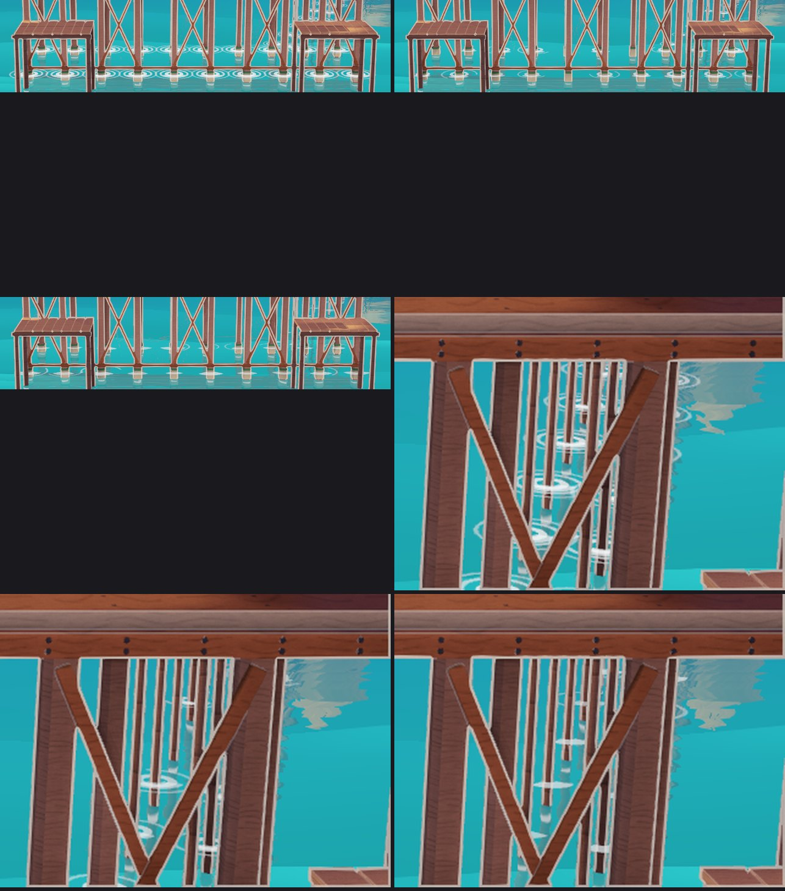
The sky, wide (today, A, B):
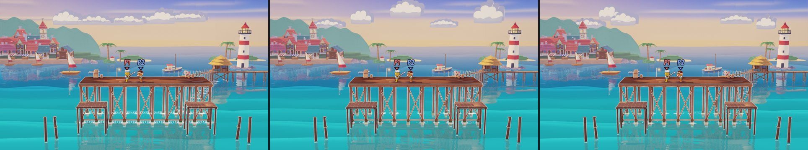
My picks: rings A, clouds B. A's rings still say "posts standing in water" without the row of targets, while B's crescents almost vanish. B's clouds leave clear sky over the fight and keep the banks over the town and the lighthouse. The picks mix freely; the viewer shows them in pairs. The rings are also lighter: 3,500 triangles (A) from 9,300.
One calm wall of larger stones
First, item 1 is built: the canyon's rock is sandstone in uneven beds (see its section below). Then the meadow. At the wide camera its wall was a grid of small pale stones, each outlined, the busiest mass under the fight. Both options keep the same warm fieldstone and moss but lay fewer, larger stones in taller courses, rarely split, their values closer together. Both also tidy the farm things at the wall's foot: at each end, three bales at odd angles (one half on another) become two side by side, with the barrel and rock kept.
| Option | What changes |
|---|---|
| A · Larger stones | Stones 1.2 to 3 wide in courses 0.85 to 1.25 tall (from 0.45 to 1.8 and 0.5 to 0.85), values half as spread. The wall's contrast at the wide camera falls 0.151 to 0.133. |
| B · Larger and deeper | A, a step lower in value, so the wall sits back under the lawn. Contrast 0.125. |
Wide, close: today, A, B, and today as shipped (lit):
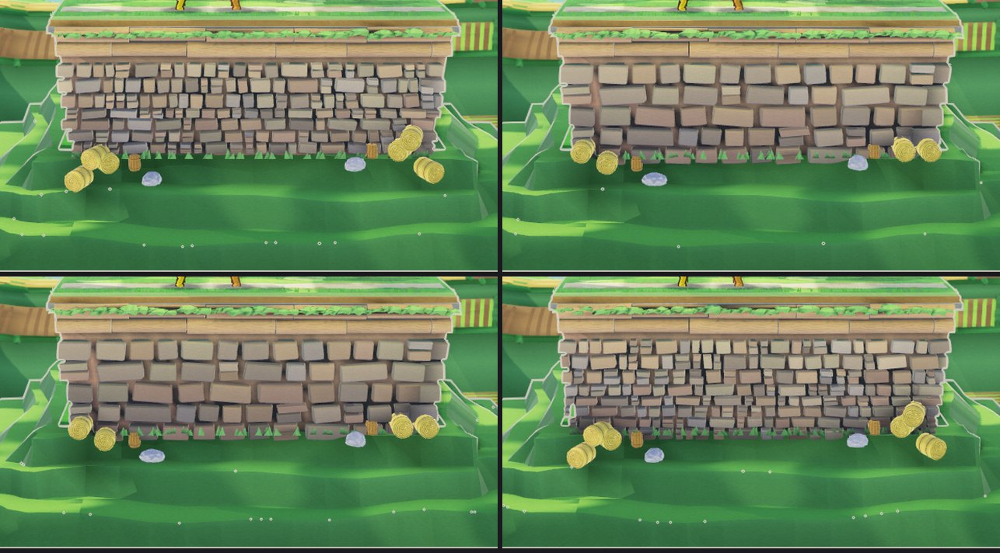
My pick: B. The larger stones do most of the work, and the step down in value lets the lawn and the fighters lead. It's also half the triangles (7,900 from 13,600). Shown before the light bake, today's wall included.
Sandstone, not planks
The canyon's rock print was thin broken lines every few pixels (left in the tiles below). Laid along the long straight beds, it ran their full length and read as wood grain. The new sandstone print is sand grains, soft patches a little deeper, and short sets of cross-bedding arcs, with no long lines. It goes on everything that took the old print: the front's beds and the platform slabs (the buttes behind carry no print). Each stage's other prints come out byte-identical.
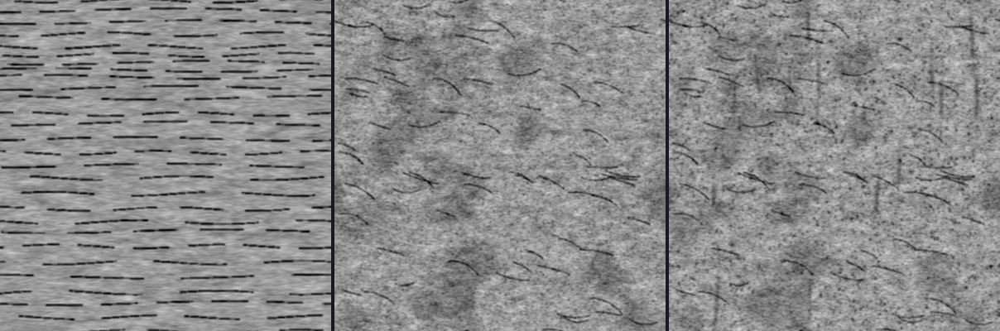
| Option | What changes |
|---|---|
| A · Sandstone | The new print: grains, soft patches, cross-bedding. |
| B · Weathered | A with faint weathering streaks down the face and a few pits. |
| C · Sandstone and uneven beds | A’s print, and the front’s beds rebuilt at uneven thicknesses (thin partings between thick beds, longer, the tone stepping less). Even beds lighter and darker by turns were the other half of the plank look at the wide camera. |
At the match camera: today, A, B, C:
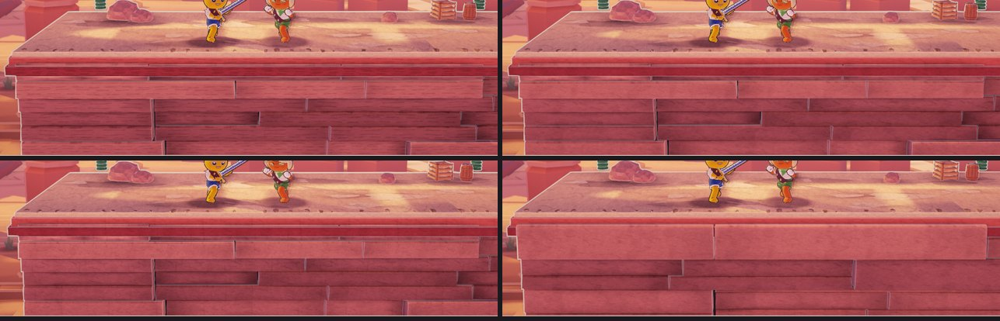
My pick: C. The print alone removes the grain up close, but at the wide camera the even beds still stack like planks. C's thick beds read as rock slabs. Honest note: C leans a little toward laid stone at the wide camera. It is shown before the light bake, so its front is paler than it will be once re-lit. B's streaks barely show at either camera.
Where every stage stands after review 8
Review 8's list is built and released. This is a fresh analysis of all five stages (meadow, grove, beach, canyon and city) with the same eight categories and the same measured regions. The full write-up is in docs/art/stages/FIDELITY_REVIEW_9.md.
| Stage | Light | Surfaces | Play area | Background land | Sky | World | Cohesion | Readability | Mean | Review 8 |
|---|---|---|---|---|---|---|---|---|---|---|
| Beach | 4 | 4 | 4 | 4 | 4 | 4 | 4 | 4 | 4.0 | 4.0 |
| City | 4 | 4 | 4 | 4 | 4 | 4 | 4 | 4 | 4.0 | 4.0 |
| Grove | 4 | 4 | 4 | 4 | 4 | 4 | 4 | 4 | 4.0 | 4.0 |
| Meadow | 4 | 4 | 4 | 4 | 4 | 4 | 4 | 4 | 4.0 | 3.9 |
| Canyon | 4 | 3 | 4 | 4 | 4 | 4 | 4 | 4 | 3.9 | 4.0 |
| Mean | 4.0 | 3.8 | 4.0 | 4.0 | 4.0 | 4.0 | 4.0 | 4.0 | 3.98 | 3.98 |
Real gains, but each closes a gap inside a 4, so still no 5. The meadow's wall is warm and its range has form, the city's platforms are steel, the grove is calmer, the beach's loops are gone, and every fighter has a shadow side. One 3, a step back: since its rock was laid in long straight beds, the canyon's rock print runs the full length of each bed, so the front and the platform slabs read as planks of wood with grain.
What keeps each column from a 5, and the order
- The canyon's rock print: a sandstone print (speckle, short cross-bedding arcs, a few weathering streaks) on the front and the platform slabs, in place of the long thin lines that read as grain.
- The meadow's wall at a distance: a grid of small pale outlined stones, the busiest, brightest thing under the fight. Use fewer, larger stones with darker joints, a little lower in value, and tidy the haybales strewn at its foot.
- The beach: every post in the water has the same white ripple rings (a row of targets), and the clouds are one unbroken strip along a line. Vary and soften the rings, and break the strip into separate banks.
- The grove's abyss: pale blue pine cards stand in the purple like trees in water. Take them out, and bring the neighbour islands' teal hex undersides toward the main island's stone.
- The canyon's cacti (your call): your pick of rolled coils reads as springs under the platforms at play size. Keep them, or try the ribbed cactus there.
- The city's street: flat purple bands at the wide camera. Add a road surface (asphalt print, lane wear, a kerb).
- Light at 5: the strong key reached the fighters, but scenery contrast barely moved. The next lever is the painted shadow colours, mocked with readability measured.
The weak spots, close (the meadow's wall wide, the canyon's front, a canyon cactus, the canyon's sky, the beach's clouds, the posts in the water, the grove's abyss, the city's street):
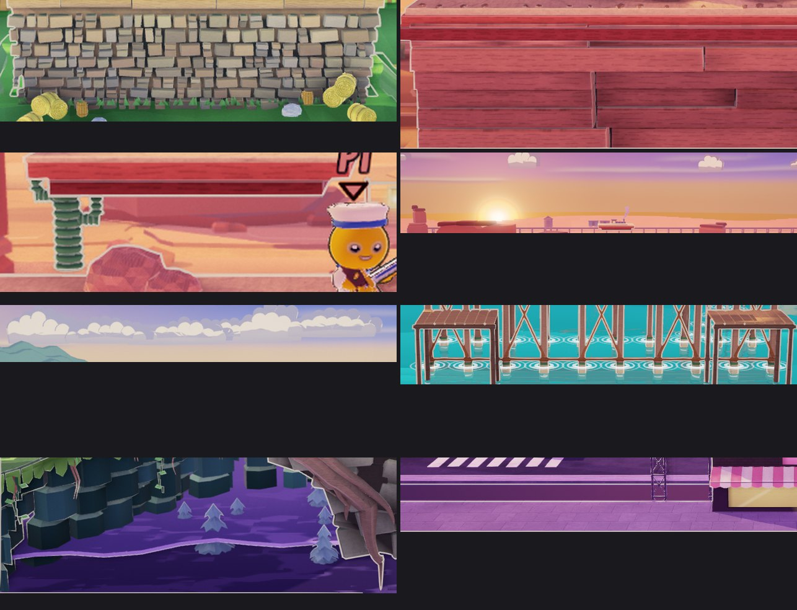
Every stage today
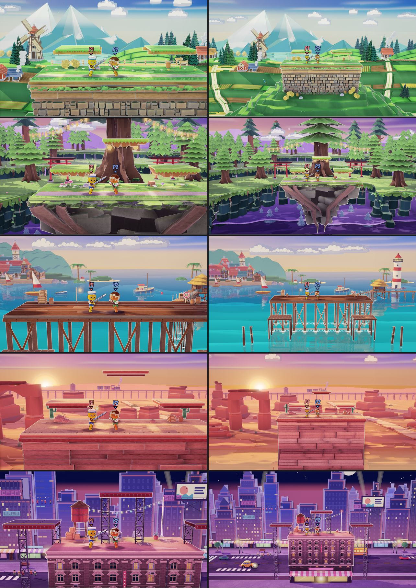
Items 1 to 6 refine what exists, within your rule; item 4 also removes something. Item 7 is still the one that can move every stage's light toward 5.
More light from the sun, less from the air
First, item 6 is built: the beach's waves are soft bands now (see its section below). Then the last item, the light on every stage. Today the even ambient light gives more of each surface's brightness than the sun does (on the meadow, 0.48 against about 0.44), so shade sits at about six tenths of the lit value everywhere and form stays faint. Both options move light out of the ambient and into the sun, sized so the lit faces keep their value. What's left of the ambient turns toward the sky's colour, so shade goes deeper and cooler, as daylight's does.
| Option | What changes |
|---|---|
| A · Firmer key | Sun ×1.12, ambient ×0.68, the ambient 30% toward the sky. |
| B · Strong key | Sun ×1.25, ambient ×0.48, the ambient 45% toward the sky. |
Readability, measured on P1's body (a spread of 0.1 is easy to see): the lit-to-shade spread on the fighter rises on every stage with B (meadow 0.296 to 0.304, canyon 0.106 to 0.118, beach 0.190 to 0.207, city 0.115 to 0.139, grove 0.177 to 0.205). The fighter-to-ground value gap holds (the beach 0.20 to 0.18; the grove 0.05 to 0.04, its narrowest; the fighters' edge light and hue keep it apart).
Close crops, today on the left and B on the right: the meadow, the grove, the city.
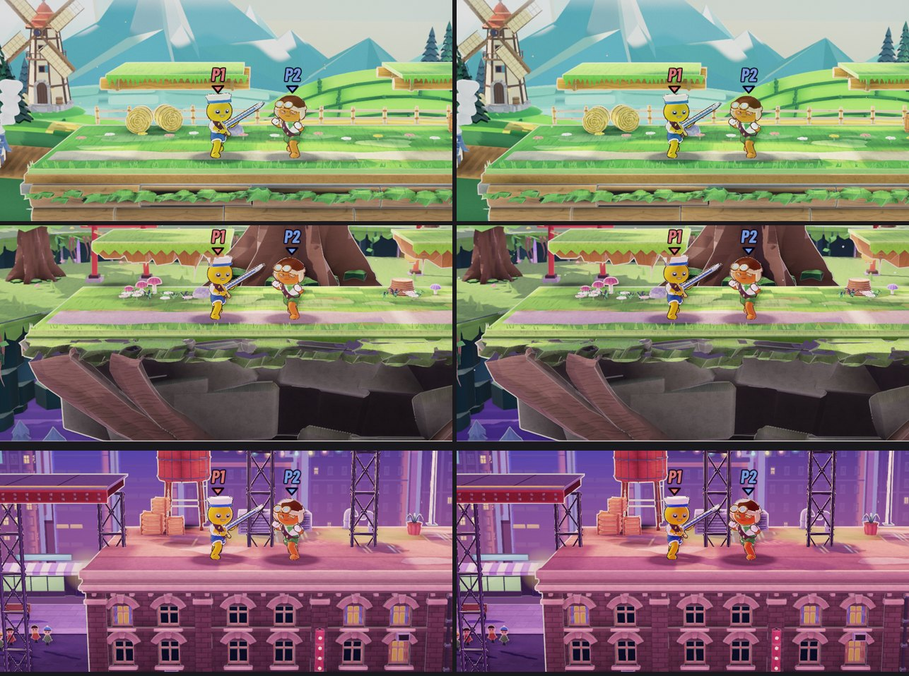
My pick: B. It's the one change here that reaches the fighters: every body shows a clear shadow side, and the shade on the props turns cool. Honest note: it's a modest step, not the jump to 5 by itself. A first try that only turned the sun up brightened the lit fronts instead of deepening the shade. Going further means changing the painted shadow colours themselves, which is a larger, riskier pass that I'd mock separately.
The beach's waves as soft paper bands
First, item 5 is built: the grove's underside has fewer, larger stones and two root groups (see its section below). Then the beach's sea. Its paper waves had a thin near-white lip on every sheet's edge, and with the cusps between the caps those lips read as white loops drawn across the water. Both options keep the same tiers of paper sea and drop the white lines.
| Option | What changes |
|---|---|
| A · Soft bands | Each sheet's edge a rounded swell rather than a cusp, its lip a wide soft lift in the water's own paler tint; narrower sheets near the stage. |
| B · Tone tiers | No lip at all: each sheet a deeper step of tone, shaded toward its edge, read by the step and the shadow. |
Wide crops: today, A, B, then A at the match camera:
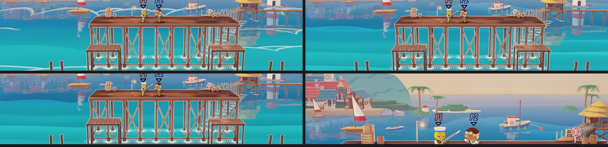
My pick: A. The pale swells still read as waves and as paper, and the sea stays bright. B is cleaner but darker, and reads more as water depth than as waves. The waves move in the game; these are stills.
A calmer underside for the grove's island
First, item 4 is built: the city's platforms are a steel deck on the red riveted girder (see its section below). Then the grove's island underside, which was busy: many small stones, five crossing roots and moss caps on half the stones, all at one weight. Both options keep the same pieces (stones, roots, moss) and use fewer, larger ones. The stones lie flatter so the roots still cross in front of them, and moss stays only under the lip.
| Option | What changes |
|---|---|
| A · Big stones | Fewer, larger stones in fewer rows, their tones closer together; the roots in two groups (a pair on the left, one on the right). |
| B · Massed | The stones gathered into a few large masses, each one tone, with dark earth between them; the roots in one group from the left. |
Wide crops: today, A, B, then B at the match camera:
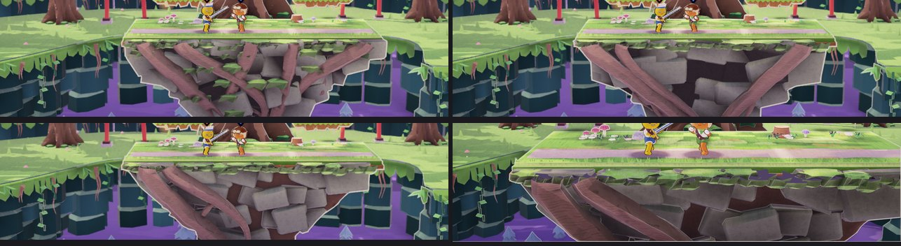
My pick: A. The two root groups frame the keel and the stones read as one rock face. B is the calmest, but its single root group leaves the right side bare. Shown before the light bake, today's front included. Also lighter: about 11,100 and 9,600 triangles, from 16,300.
The city's platforms in steel, not a plain card
First, items 2 and 3 are built: the meadow's range has its snowcaps and tree line, the canyon's front its straight beds (see their sections below). Then the city's platforms on the scaffold towers, which were the one set of platforms still a plain dark card. Both options are built in the city's own materials, and nothing rises above where the fighters stand.
| Option | What changes |
|---|---|
| A · Steel deck | A deck of steel plates with their seams, a painted safety line along the front edge, on a riveted girder in red-oxide primer (the colour of the water tower), with a joist under every seam. |
| B · Scaffold boards | Four scaffold boards with steel hoops at their ends, laid on steel tubes with clamps, over a toe board painted in hazard stripes. |
Close crops: today, A, B, then A wide:
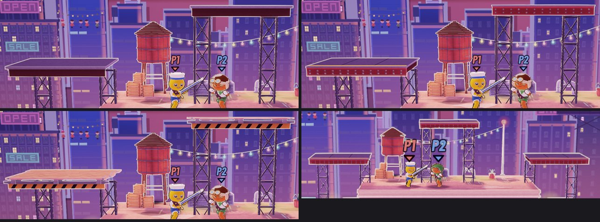
My pick: A. The red girder ties the platforms to the scaffold towers and the water tower, and it stays calm next to the fighters. B reads most clearly as a building site, but its hazard stripes are the loudest thing at platform height. Shown before the light bake, today's platforms included.
Straight beds of rock instead of wobbly plywood
At the wide camera, the canyon's sediment courses read as stacked plywood: every course bulged with the same jutting front as its slab. Now each course is laid in long, flat-fronted beds of rock, four to nine units long, with few clean vertical joints, each bed a little in or out. (A first try with short blocks read as a brick wall.) The piece also gets lighter: 21,600 triangles, from 38,500.
| Option | What changes |
|---|---|
| A · Straight beds | Long flat-fronted beds of rock, with few joints. |
| B · And recessed beds | A, with every third bed set further back as a shadow line. Barely different from A at these cameras. |
Today on the left: wide A, wide B, then B at the match camera:
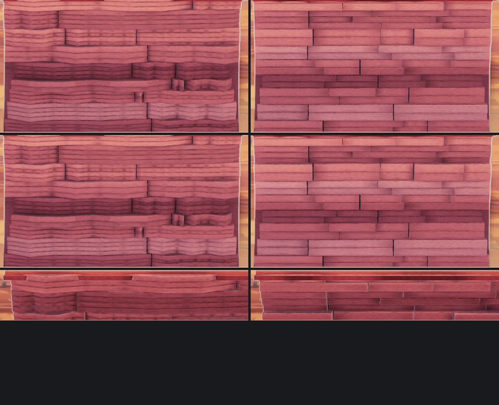
My pick: A. Honest note: they now lean a little toward stacked planks, but they're far cleaner than the wobble. Shown before the light bake, today's front included.
Snowcaps on the meadow's range
First, item 1 is built: the meadow's wall is warm fieldstone now (see the wall section above). Then the mountains, which filled the top third of the frame as a few flat teal planes. The range model is painted by height now. Above a ragged snow line, the faces turned upward take snow, more of it near the summits. Low down a deep green tree line runs round the foot (mostly hidden behind the hills at these cameras). Both are seen through the air at the range's depth, so the far range stays paler.
| Option | What changes |
|---|---|
| A · Snow and tree line | The snowcaps and the tree line. |
| B · And rock bands | A with broken bands of darker rock across the middle of the slopes. At these cameras they barely show. |
Today on the left: A, then B (match camera), and B wide:
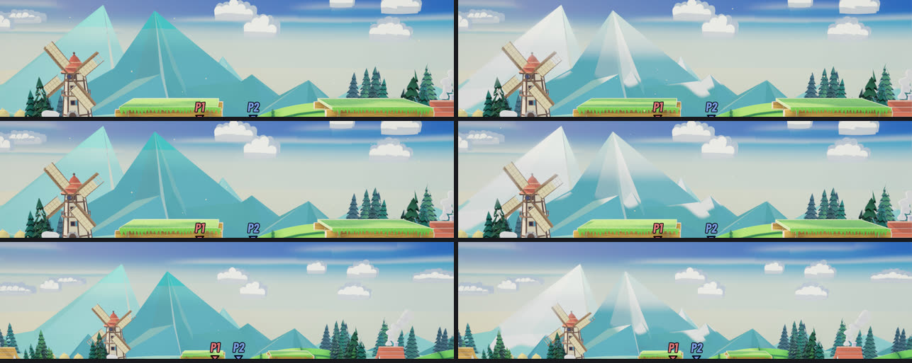
My pick: A. The snowcaps do the work; the rock bands add nothing you can see.
Warm fieldstone, believable moss
Why it was grey: the fieldstone used the old wall's near-grey stone colour, and the stage front's calm and cool shade took the rest of its warmth, so it measured saturation 0.02. The moss used the lawn's bright lime. Both options paint the stones their own warm sandstone grey and the moss a deep olive, as low caps with no drips. A keeps a moderate spread of stone tints. B widens the warm-to-cool spread and keeps moss only under the logs. You asked for a fix, so B is built and lit: the wall now measures hue 32, saturation 0.19.
Close, today on the left: A, then B (match camera), and B at the wide camera:
The build, before on the left (match camera, then wide):
Where every stage stands after review 7
First, the last code-built small things (the canyon's telegraph poles, the stilt hut's floats and the grove's flower tufts) are now models. They change nothing you can see at either camera, so they went in without asking for a pick. That finishes review 7's list, except its "lived-in world" item, which needs new elements your rule doesn't allow. Then a fresh analysis: the same eight categories and the same measured regions. The full write-up is in docs/art/stages/FIDELITY_REVIEW_8.md.
| Stage | Light | Surfaces | Play area | Background land | Sky | World | Cohesion | Readability | Mean | Review 7 |
|---|---|---|---|---|---|---|---|---|---|---|
| Beach | 4 | 4 | 4 | 4 | 4 | 4 | 4 | 4 | 4.0 | 4.0 |
| Canyon | 4 | 4 | 4 | 4 | 4 | 4 | 4 | 4 | 4.0 | 4.0 |
| City | 4 | 4 | 4 | 4 | 4 | 4 | 4 | 4 | 4.0 | 4.0 |
| Grove | 4 | 4 | 4 | 4 | 4 | 4 | 4 | 4 | 4.0 | 3.9 |
| Meadow | 4 | 3 | 4 | 4 | 4 | 4 | 4 | 4 | 3.9 | 3.9 |
| Mean | 4.0 | 3.8 | 4.0 | 4.0 | 4.0 | 4.0 | 4.0 | 4.0 | 3.98 | 3.95 |
The skies closed; no score is a 5. One 3, and it's a defect: the meadow's new fieldstone wall renders grey (saturation 0.02) with neon-green moss drips. It reads as a grid of grey cubes, a step back from the old wall.
What keeps each column from a 5, and the order
- The meadow's wall fixed: warm, varied fieldstone, with moss in the joints at a believable green.
- The meadow's mountain: a few flat teal planes filling the top third. It needs painted form: snowcaps, rock bands, a tree line, a paler far range.
- The canyon's front: at the wide camera the courses read as wobbly stacked plywood. They should run straight and break cleanly.
- The city's scaffold platforms: still plain dark slabs; give them a steel deck with plates and a painted edge.
- The grove's underside: busy. Fewer, larger rock masses, grouped roots, and moss only at the lips.
- The beach's waves: white loops across the sea. Make them soft paper bands.
- Light at 5 (game-wide): the paper finish and ambient carry most of every surface's light, so form and shade stay faint. A real key light on the play area, measured against the fighters' readability, is the step that can move light and surfaces toward 5 everywhere. It's also the biggest risk.
The weak spots, close (the meadow's wall, the meadow's mountain, the canyon's front wide, the grove's underside, the city's platform, the beach's sea):
Every stage today
Items 1 to 6 refine what exists, within your rule. Item 7 is the one that can lift every stage's light and surfaces toward 5.
Light and shade across the play areas, lamp pools, the city's glow
Built: A on every stage. Before on the left, the build on the right: meadow, grove, canyon, beach, city. In the new playtest build together with the skies, play tops and canyon.
First, canyon B is built (before and after in the canyon section above). The city's middle towers were tried as a model and dropped: at that distance the paper cards and the air hide all relief, so nothing changed. Then shaped light. A finding first: the play tops can't take a "sun pool" as a brightening. The tone curve squeezes any lift on an already bright lawn to almost nothing, and even with the sun switched off the meadow's lawn only fell from 0.71 to 0.65, because ambient and the paper finish carry most of its light. The cloud shadows existed but never read for the same reason. So the light is shaped from the shade side: drifting cloud shade laid on the surfaces' own colour, smaller clouds so several fall across a stage, and the sun falling in the gaps.
| Option | Day stages | City at night |
|---|---|---|
| A · Soft | Cloud shade over about half the ground near the stage, a soft cool tone, a few units across, drifting slowly; sun in the gaps between. | The roof's lamp pools brighter and a quarter wider; a warm edge of the street's glow up each tower's corner and along its parapet, strongest low down. |
| B · Firm | The same with a deeper, cooler shade, so the shade and sun read clearly. | The pools brighter and wider again; the glow edges stronger. |
Close, today on the left and B on the right: meadow, grove, canyon, beach, city.
My pick: A. B's shade is clearer in a still, but it darkens the play areas overall, and the cool tone greys the canyon's warm sand. A shapes the light without moving the stages' values much. Honest note: this reads more as a partly cloudy day than as crisp pools of sun. The paper look's flat, bright shading limits how far light can be shaped on the play tops.
Clearing the space behind the fighters
Built: B, lit. Before on the left, the build on the right (the match camera, then wide). Next: the city's middle towers.
First, play tops B are built on every stage and lit (before and after in the play tops section above). Then the canyon. Review 7 found two things right behind the fighters: the mesa there read as a round pink drum, and the train crossed as a bold line at the head height of anyone on the side platforms.
| Option | What changes |
|---|---|
| A · A broken table of rock | The drum becomes a broken table of rock, wide and low: three blocks of uneven height with crevices between, the middle one a step lower so the skyline is notched, each banded in the strata with a dark cap, and fallen blocks at the foot. The space behind the fighters opens onto the far plain. |
| B · And the railway far back | A, with the trestle moved much further back (175 units, from 124). The train is small and hazy near the horizon instead of a bold line between the platforms. (Lowering it instead was tried, and it ran right behind the fighters' name tags.) |
Behind the fight, close, today on the left: A, then B.
My pick: B. Both fixes are needed for the space behind the fighters to read calm: the rock is no longer a drum, and the train stays in the world without drawing a line through the fight. Shown before the light bake.
The surfaces the fighters stand on
Built: B on every stage, lit. Before on the left, the build on the right: meadow, grove, canyon, beach, city. Next: the canyon behind the fight.
First, skies B are built on the meadow and grove (before and after in the skies section above); by review 7's measure every column is now a 4. Then the first step toward 5s: the play tops, the most-seen surfaces in the game, still one plain colour each. One rule shapes this: the stage test lets nothing poke up where fighters stand, so the detail lies flat on the top (a hair above it). Tufts and pebbles only go along the very front edge, which is outside the walk area.
| Option | What changes |
|---|---|
| A · Worn and varied | Flat patches over each top, each a step from the top's own colour. Lawns: deeper clover patches, sunlit patches and trodden earth fraying along the path's sides, kept off the path itself. Canyon: darker drifts and pale wind patches of sand. Beach: sun-bleached and wet patches on the boards and a couple of replaced, paler boards. City: tar patches and sun-faded sheets on the roof. |
| B · And the edges | A, with grass tufts along the lawns' front edges, pebbles along the canyon's, and nail heads in pairs on the dock's boards where they cross the joists. (The city has nothing more, so its B is A.) |
One top per stage, today on the left and B on the right: meadow, grove, canyon, beach, city.
My pick: B. It's a quiet change by design, so nothing competes with the fighters, but the tops no longer read as one flat colour. Honest note: the lawns' measured contrast moves only a little (meadow 0.071 to 0.073, grove 0.067 to 0.077). Most of the gain is in the edges and the dock. A true 5 here would need hand-painted detail, and this is the step that fits the walk rule. Shown at the match camera, before the light bake.
The last two skies
Built: B on both. Before on the left, the build on the right (the meadow at the match camera and wide, the grove wide). That closes review 7's two 3s. Next: the play tops.
Review 7 left two 3s, both skies. On the meadow, the card clouds were drawn up to 34 units high, so at the match camera half of them were cut by the top of the frame, over one pale teal. On the grove, the blue top and pink horizon met halfway and the sky read lilac-grey between the trees.
| Stage | A | B |
|---|---|---|
| Meadow | The clouds lowered into the frame and a little smaller; the gradient fitted to the sky the cameras see, a deeper blue at the top of the frame and the pale haze held at the horizon. | A, with a warm glow behind the mountains and a softer horizon, so it reads as late-morning light rather than flat teal. |
| Grove | An evening gradient: a deep violet-blue at the top of the frame and a warm peach glow low behind the forest. | A, with the clouds lowered into the gaps between the trees. |
Close, today on the left: the meadow at the match camera (A), the meadow wide (B), the grove wide (A):
My pick: B on both. The meadow's top of frame goes from teal to a clear blue (hue 197 to 215, saturation 0.31 to 0.35) with every cloud whole; the grove gains a warm evening band and clouds in the gaps. The grove's change is the smaller of the two: its sky only shows between the trees.
Where every stage stands after review 6
The same analysis on the build you have (playtest-2026-10-22-sim146-review6): the same eight categories scored 1 to 5, the same measured regions. The full write-up is in docs/art/stages/FIDELITY_REVIEW_7.md. A caution: the judge is the same hand that built the work.
| Stage | Light | Surfaces | Play area | Background land | Sky | World | Cohesion | Readability | Mean | Review 6 |
|---|---|---|---|---|---|---|---|---|---|---|
| Beach | 4 | 4 | 4 | 4 | 4 | 4 | 4 | 4 | 4.0 | 4.0 |
| Canyon | 4 | 4 | 4 | 4 | 4 | 4 | 4 | 4 | 4.0 | 3.6 |
| City | 4 | 4 | 4 | 4 | 4 | 4 | 4 | 4 | 4.0 | 3.6 |
| Meadow | 4 | 4 | 4 | 4 | 3 | 4 | 4 | 4 | 3.9 | 3.9 |
| Grove | 4 | 4 | 4 | 4 | 3 | 4 | 4 | 4 | 3.9 | 3.9 |
| Mean | 4.0 | 4.0 | 4.0 | 4.0 | 3.6 | 4.0 | 4.0 | 4.0 | 3.95 | 3.8 |
38 of 40 scores are 4. The two 3s are skies: the meadow's card clouds are cut by the top of the frame over one pale teal, and the grove's sky between the trees is a washed lilac-grey (saturation 0.07). Nothing is a 5 yet.
To all 4s
One round: the meadow's clouds lowered into the frame in two depths with a horizon haze and glow, and the grove's sky given a real evening gradient with a warm glow behind the forest.
To 5s
- Surfaces: the play tops are the most-seen surfaces and still plain (meadow lawn contrast 0.069). Worn grass, tufts, a walked path, weathered deck boards.
- Background land: the canyon's mesa behind the fight reads as a plain pink box and the train crosses at head height; the city's middle towers are still flat cards.
- Sky: lit and shaded clouds on the day stages, stars or a cloud layer at night.
- World: a lived-in world at true scale: people in the beach town, a worked farm, more chimney smoke. No animals.
- Light: shaped light on the play areas: sun pools and cloud shadows, dappled light under the grove's tree, lamp pools at night.
- Cohesion, readability, play area: the last code-built bits, the canyon's train off the fighters' heads, the fighters themselves.
Close, the weak spots (the meadow's, grove's and city's skies, the canyon behind the fight, the meadow's lawn, the beach's deck):
Every stage today
Meadow, grove, beach, canyon, city; the match camera on the left and wide on the right:
Realistically: all 4s is one round; a mean of about 4.4 to 4.5 is three or four more. A 5 in surfaces and light is the largest investment, hand-authored detail on every big surface and a lighting finish per stage.
Lanterns, bulbs and townsfolk, made like the rest
Built: B. Before on the left, the build on the right (the grove and city at the match camera). That completes review 6; all seven items are in the new playtest build.
First, platforms A are built on all three stages; before and after are in the platforms section above. Then item 7, the last one. The most visible small code-built things left are the string lights (the grove's lantern strings and the city's party lights were bare spheres), the grove's streamers (yellow, pink and blue diamonds that read as dangling crystals), and the city's townsfolk (trapezoid paper dolls). The lawn flowers barely show at play distance, so they stay.
| Option | What changes |
|---|---|
| A · Modelled lights | Two new models. A paper lantern on the grove's strings: a ribbed paper body that glows warm, dark lacquered caps, a red tassel. A glass bulb on a dark socket on the city's strings, each in its own colour. |
| B · And paper streamers and townsfolk | A, with the grove's streamers recut as white paper zigzags like those on its gates, and the city's townsfolk drawn in the fighters' own build: a round body, mitten hands, shoes, a round head with hair and two dot eyes, and a bobble hat or a scarf on some. |
Close up, today on the left: the grove's strings (A, then B), the city's lights (A), its street (B) and its rooftop party (B):
My pick: B. The grove's strings read as a festival (lanterns and shrine paper) instead of crystals, and the townsfolk belong to the same world as the fighters.
Platforms made of the stage they float over
Built: A on all three, lit. Before on the left, the build on the right: the meadow, the grove and the canyon at the match camera. Next: item 7, the small code-built things.
First, light finish C is built on every stage; before and after are in the light section above. Then item 6. Review 6 found the floating platforms plain: a green slab with a scalloped trim on the meadow and grove, and a bare board on the canyon. (The beach's are already dock boards with rope, and the city's a steel deck.) The tops stay exactly where the fighters stand; only what's under them changes.
| Stage | A | B |
|---|---|---|
| Meadow | Turf on logs: a turf mat on two round logs, their cut ends showing and lashed with rope near each end (the farm's own build), with an uneven tufted lip in place of the even scallops. | And moss: A, with moss and grass hanging over the logs. |
| Grove | Little islands: turf over a band of earth, with a rocky underside of the island's dark earth hanging under it, and a few roots. | Deeper, mossier: A with a deeper underside, moss hanging and more roots. |
| Canyon | Sandstone slab: a sand top over two strata courses of the stage's own rock, the lower one set in and broken short at the ends. | A piece of mesa: A with a tapered rock hanging under it. |
One platform per stage, close up, today on the left: the meadow (A, then B), the grove (A, then B) and the canyon (A, then B):
My pick: A on all three. Each reads as made of its stage, and A keeps the space under the platforms clear: B's deeper undersides and hanging moss come down toward a fighter standing beneath. Shown at the match camera, before the light bake (today's rebuilt the same way).
Light that bounces, a firmer grade, lamps that glow
Built: option C on every stage. Before on the left, the build on the right, each stage at the match camera. Next: item 6, the platforms.
First, no clones B is built on all three stages (before and after are in the no-clones section above). Then item 5, which works the same way on every stage. Each stage already has a key light, painted shadows, a grade (warm lights, cool shade) and a soft bloom. Review 6 found three things missing: the shade picks up no colour from the ground around it, the grade is gentle, and only the city's windows and the effects glow.
| Option | What changes |
|---|---|
| A · Bounce light | The side of everything turned from the sun picks up the colour of the ground the light comes back from: a fresh green on the meadow and grove, warm sand in the canyon, the sea's cyan on the beach, the street's pink glow in the city. It's strongest on faces turned down (the platforms' undersides, the eaves), and half as strong on the fighters. |
| B · And a firmer grade | A, with each stage's existing grade (warm lights, cool shade) a step stronger and a little more contrast. |
| C · And lamps that glow | B, with the bloom starting lower, so the lanterns, string lights, lit windows and lamps glow softly, not just the effects. |
This round's changes are small by design: the light is the last layer, and its job is to tie the pieces together, not to be noticed. The meadow's platform undersides show the bounce best (0.59 to 0.65, greener). In the canyon the paper finish carries most of the shade, so the bounce shows less. One fix on the way: a few thin pieces with no proper normal turned the first bounce into white blots; they're guarded now.
Close up, today on the left and C on the right: meadow, canyon, beach, city, grove.
My pick: C. Each step is small, but together they make the shade read as lit by the world around it, and the lamps read as lamps. B is the safe middle if C's glow feels like too much on the city.
Nothing you can spot twice in a still
Built: B on all three; the meadow and grove re-lit. The build before on the left, the new one on the right: the grove, the beach and the meadow, wide. Next: item 5, the light finish.
First, the three fronts are built (B on all three) and lit; before and after are in the fronts section above. Then item 4. Review 6 found three repeats you can spot in a single still: the grove's forest is one tree at one size and one turn, the beach's paper waves are one scallop at one spacing, and the meadow's stage hill is a regular stepped cake of thin sheets. Each stage has two options:
| Stage | A | B |
|---|---|---|
| Grove: the forest | Turned and sized: the same tree, each one turned and sized (within a sixth) by its place. No new model. | Three shapes: A, with the tree in three shapes of the same kind: today's, a taller slimmer one with six tiers, and a broad low one with its crown a little off its axis. Each tree's place picks its shape. Still one kind of tree, as your rule asks; the great tree stays as it is. |
| Beach: the paper waves | Uneven waves: each tier's arcs have their own width and depth, wandering along the row. | Uneven and broken: A, with calm stretches where a tier's edge lies flat, with no lit lip and no shadow, so the rows break up. |
| Meadow: the stage hill | Fewer, bigger sheets: about a third as many sheets, each of its own height, with a broader wobble in their edges. | Terraced banks: A's levels as terraces, each shelf falling to the next on a grass bank, as the farmland's terraces beside it do. |
Close up, today on the left: the grove's forest (A, then B), the beach's sea (A, then B), and the meadow's hill (A, then B):
My picks: B on all three. The grove's three shapes break the forest's repeat at the cost of two small tree models (2,900 triangles each); the broken waves give the sea calm stretches as well as uneven ones; the terraced hill ties the stage's hill to the farmland's terraces. The meadow's hills, today's included, are shown before their light bake. As before, you can pick per stage.
The closest surfaces, made at the size you see them
Built: B on all three, lit. The build before on the left, the new one on the right: the meadow, the canyon and the grove wide, then the meadow at the match camera. Lit, the canyon's courses darkened its face back to 0.30, so the canyon's front lift went from 0.2 to 0.35 to hold it at 0.33. Next: item 4, no clones.
First, canyon C is built and lit (before and after are in the canyon section above). Then item 3, which covers three stages, each with two options. One finding came first: the front builders bake their shade against an export of the stage, and that export now held the shipped front itself, so a new front baked inside the old one went black. The export leaves the modelled front out now. Today's fronts are rebuilt the same way here, so they compare fairly. All are shown before the stage's light bake, which runs when one ships.
| Stage | A | B |
|---|---|---|
| Meadow: the stone wall under the logs, a grid of grey bricks of one size | Fieldstone: courses of uneven height, big stones with small ones packed round them, each a lump of its own tone and tint (ochre, blue-grey, rosy, lichen), set a little in or out. | Fieldstone and moss: A, with moss on the stones' tops, thickest under the logs, a few tongues of it down their faces, and grass at the wall's foot. |
| Canyon: the strata face, soft and smudged at the wide camera | Cut edges: each slab's top front edge chamfered so it catches the light as a line, and a finer mesh so the baked shade follows the shapes (15,600 triangles, from 10,900). | Sediment courses: A, with each slab laid in thin courses of sediment, each a little in or out and a step lighter or darker (38,500 triangles). |
| Grove: the cliffs, flat dark-teal blocks over a flat violet floor | Shaped rock: each block a tone of its own, a deeper bevel as a lighter lit rim, and roots hanging from the lips that face the camera. | Rock and a misty valley: A, with two layers of violet mist in the abyss, their cut edges showing, and the tops of a forest rising through them in hazed violet-greens. |
Close up, today on the left: the meadow (match camera A then B, wide A then B), the canyon (the same order), then the grove (A on the left side, B on the right):
My picks: B on all three. The meadow's moss ties the wall to the lawn. The canyon's courses give the face the most authored detail, though at 38,500 triangles it's the costliest. The grove's mist gives the chasm depth instead of a floor. Each stage ships on its own, so you can pick per stage, for example "meadow B, canyon A, grove B".
Buttes of rock, not stacked discs
Built: option C, lit. The build before on the left, the new one on the right (wide, then the match camera). Next: item 3, the fronts' surfaces.
First, city C is built: the night sky, the haze between the rows and the cooler colour plan are in the game (before and after are in the city section above). Then the canyon. Review 6 found three things here. The butte right behind the fighters was still a stack of round discs: every tier was cut into bands, each a small block with its own bevel. The plain at the wide camera was empty. The arch read boxy.
All three options break the arch's silhouette: one end of the span is broken off at a slant, with the piece lying at the left leg's foot, and a notch is stepped into its top.
| Option | What changes |
|---|---|
| A · Solid buttes | Every butte is built as rock, as the arch is: two or three massive tiers with four or five sides, each set off the one under it and stepping well in. A pale band runs between the tiers, a dark cap sits on top, and on the tall ones a lump of cap is left standing. |
| B · And a mesa behind the fight | A, with the butte behind the fighters turned into a broad, flat-topped mesa: wider than it is tall, a flat face toward the camera, and a pale band through it. A calm table behind the fight, not a pillar. Being lower, it shows the train above it, at the height of the top platform. |
| C · And outcrops on the plain | B, with low rock ledges and boulders across the plain (one or two flat tiers, a pale band, a boulder or two beside each), kept off the dry wash, the buttes' feet and the strip behind the fight. |
Close up, today on the left (top to bottom: behind the fight with A, then with B; the arch and the butte beside it with A; the plain with C):
These are shown without the canyon's light bake, today included, so they compare fairly; the chosen one gets lit when it ships. My pick: C. The solid buttes fix the discs, the mesa gives the fight a calm backdrop, and the outcrops fill the plain at the wide camera. Take A if you'd rather keep the tall butte behind the fight and the train hidden behind it.
A night sky over the city, and air between its rows
Built: option C. Today on the left, the build on the right (wide, then the match camera). Next: item 2, the canyon behind the fight.
Review 6 scored the city's sky 2, the lowest left in the game. The cameras see only the lowest few degrees of sky, and the city's glow filled all of it, so the sky read as one flat magenta (value 0.37, saturation 0.58). Behind that, the three rows of towers sit in one purple family, so they separate only a little.
| Option | What changes |
|---|---|
| A · Night sky | The sky graded across the little the cameras see: deep indigo-blue at the top of the frame (0.07, from 0.34), with the city's glow rising from behind the skyline and held low. The towers are unchanged. |
| B · Night sky and haze | A, plus haze between the rows: each row's foot fades into the street's lit pink haze, the further rows more, so each row reads further back than the one in front. |
| C · Night sky, haze and a colour plan | B with the colours split by temperature: a cooler navy sky and blue-violet towers, with the warm light kept for the street haze, the lit windows, the glow and the play building. |
Close up, today on the left and C on the right (wide, then the match camera):
My pick: C. The sky is the gain in all three. C's cooler towers and sky are the first thing in the city that isn't purple, and the warm street, windows and play building stand out against them. Take A if you want the towers left exactly as they are.
What every stage needs to reach 5
The same analysis as review 5, run on the build you have: every stage at the match camera and wide, the same eight categories scored 1 to 5 (5 means a still could sit beside the references), and the same measured regions. This time each category also says what a 5 needs. The full write-up is in docs/art/stages/FIDELITY_REVIEW_6.md.
| Stage | Light | Surfaces | Play area | Background land | Sky | World | Cohesion | Readability | Mean | Review 5 |
|---|---|---|---|---|---|---|---|---|---|---|
| Beach | 4 | 4 | 4 | 4 | 4 | 4 | 4 | 4 | 4.0 | 3.8 |
| Meadow | 4 | 4 | 4 | 4 | 3 | 4 | 4 | 4 | 3.9 | 3.9 |
| Grove | 4 | 4 | 4 | 4 | 3 | 4 | 4 | 4 | 3.9 | 3.9 |
| Canyon | 4 | 3 | 4 | 3 | 4 | 4 | 3 | 4 | 3.6 | 3.5 |
| City | 4 | 4 | 4 | 4 | 2 | 4 | 3 | 4 | 3.6 | 3.4 |
| Mean | 4.0 | 3.8 | 4.0 | 3.8 | 3.2 | 4.0 | 3.6 | 4.0 | 3.8 | 3.7 |
What moved: the beach is the first stage at 4 in every column (the paper sea and the sky). The city's scaffolds and quiet band took its play area and readability to 4, but its sky is still 2. The canyon reads better, but the butte right behind the fighters is still a stack of round discs.
What a 5 needs
- Sky (3.2): a painted sky, with a gradient, a glow behind the land or skyline, a haze band, and clouds whole in the frame. The city's flat magenta is the worst.
- Surfaces (3.8): the closest, biggest surfaces are the weakest made: the meadow's grid of grey bricks, the canyon's smudged strata (the bake is too coarse), the grove's flat teal cliffs, flat lawn tops.
- Cohesion (3.6): one thing per stage still looks made another way: the city's flat purple tower cards, the canyon's smudged strata beside crisp props.
- Background land (3.8): the canyon's disc butte and empty plain, the meadow's stepped stage hill, the grove's flat purple void.
- World and life (4.0): clones you can spot in a still: the grove's one pine, the beach's even wave arcs, the city's code-built street people.
- Light (4.0): the background is lit as evenly as the front. A 5 needs shaped shadows, warm and cool bounce into the shade, bloom on lights, and a grade per stage.
- Play area (4.0): the floating platforms are plain slabs everywhere; a 5 makes them from the stage's own materials.
- Readability (4.0): good everywhere. A still is half fighters, so the character work counts here too.
The weakest things, close up (the meadow's front and stage hill, the grove's forest and underside, the beach's wave arcs, the canyon's strata, the city's sky, the canyon behind the fight):
Every stage today
Meadow, grove, beach, canyon, city; the match camera on the left and wide on the right:
Recommended order: 1. the city's sky and depth, 2. the canyon behind the fight, 3. the fronts' surfaces, 4. no clones, 5. a light finish per stage, 6. the platforms, 7. the small code-built things. A realistic target is a mean of about 4.5 over the next rounds. Surfaces and light at a true 5 need hand-made detail on every big surface; that's the largest investment.
A quieter city behind the fighters
Built: option A. Today on the left, the build on the right (wide, then the match camera). That finishes review 5's four big items; left are the smaller ones: the lawns' form, the meadow's stage hill, and the last code-built small things.
First, canyon B is built: the arch is solid rock, the front a step lighter, and the trestle set back. Then the city. Review 5 found its towers right behind the fighters the busiest background in the game, with the scaffold towers reading as bright white lattices against the night. All three options make the same two changes; they differ in the sky:
- A quiet band behind the fight: on the two nearer rows of towers, within about 26 units of the middle, far fewer windows are lit, and the facades are drawn toward their own wall colour. The signs and the towers to the sides are unchanged.
- Dark scaffolds: the towers are painted a deep slate, and their struts take a dark ink line instead of the pale paper edge the scenery gets. On struts that thin, the pale edge was most of what showed.
Up close behind the fighters, today on the left:
| Option | The sky |
|---|---|
| A · As it is | The night glow as it is. |
| B · Soft night clouds | The sky pass's soft streaks, lit from below by the city's glow. Little shows: the towers cover most of the sky. |
| C · Card night clouds | Dark card cloud banks with puffed edges along the top of the frame, lit along their undersides by the glow. It adds a layer of night sky above the towers. |
My pick: A. The quiet band and the dark scaffolds are the gains here. Take C if you want the night sky to have more going on.
The canyon's arch, trestle and front
First, sky B is built on the meadow, canyon, beach and grove. Then the canyon's middle distance, which review 5 found held three first-pass shapes. All three options rebuild the arch and lighten the front. They differ in the trestle:
- The arch, as rock: each leg is two massive blocks, the upper one set in and turned, with one pale band between them; the span is one solid piece with a true arch underneath and an uneven top under a darker cap. Before, each leg was a stack of six-sided blocks in alternating strata, which read as discs.
- The front, a step lighter: its strata lifted a fifth of the way toward a pale sand, so the lower half of the frame is less heavy.
| Option | The trestle |
|---|---|
| A · As it is | Where it stands today, crossing the frame just above the platforms. |
| B · Set back | Moved behind the far row of buttes and a little lower: thinner, hazier, broken by the buttes in front of it. The train still runs its length. |
| C · With ends | A shorter track that comes out from behind one butte and goes behind another, so it reads as a crossing between them rather than a line across the frame. The train runs end to end. At the match camera it looks the same as today, since that view only sees the middle. |
Also tried: lowering the trestle near the floor to hide it behind the buttes. At the match camera that put the train right behind the fighters, so it's left out. My pick: B. The arch and the front are the clear gains, and setting the trestle back quiets the one line without losing the train.
The sky pass
First, the paper sea is built: the beach's sea is now the reworked paper waves (before and after below). Then the skies, which review 5 found to be plain gradients. One thing I learned measuring them: at both cameras the sky is only the top sixth of the screen (up to about 5 degrees above the horizon). On the meadow the mountains cover most of it, on the grove the forest, and on the city its glow and mist. So the sky is shown here on the three stages where it reads: the meadow, the canyon and the beach. The city's sky goes with item 4.
| Option | What it is |
|---|---|
| A · Horizon light | A bright band of haze just above the horizon, a low bank of soft haze along it that hides the hard line, and broad, soft mottling so the sky isn't a perfect gradient. Subtle. |
| B · Painted streaks | A, plus soft stratus streaks at three heights, broken along their length, lit on top and shaded underneath. Subtle; it reads best in the canyon's sunset. |
| C · Paper cloud banks | A, plus banks of card cloud at three heights, their tops cut into rounded puffs, a shaded lower body under a lit upper one, a lit cut edge and the shadow each lays on the sky. The only option that clearly changes the frame. It sits alongside the card clouds already there. |
My honest take: the sky is a smaller gain than review 5 expected, because so little of it shows. I'd take B (a quiet improvement, best on the canyon) and move on to item 3, the canyon's middle distance, which fills far more of the frame. Pick C if you want the skies to read as paper too.
A sea that reads as water
Today the sea is one bright cyan sheet with rows of painted wave crests, which read as stripes across half the frame. The reference's water is clear turquoise over the shallows and deepens further out. Light ripples through it in a fine net, and everything standing in it or over it is reflected. Three looks, all on the sea's own shader, with the rest of the stage unchanged:
| Option | What it is |
|---|---|
| A · Clear water | Colour by depth: clear turquoise near the pier, a deeper teal-blue through the middle, paler toward the horizon. A soft, wandering caustic net of light near the stage, fine ripples further out, and broad drifting patches. No crest rows. The ripple rings round the posts and the sun's glints stay. |
| B · Clear water with reflections | A, plus reflections of everything standing in or over the water: the pier and its posts, the boats, the town, the islands, the lighthouse. Each is a little darker than what it shows and rippled, fading with distance. About 0.15 ms of GPU time. |
| C · Paper waves (reworked) | The sea as overlapping sheets of card, each a tier further out, its edge cut into rounded wave caps. Each sheet has its own tone and is shaded across toward its edge, its cut edge is a lit lip, and it lays a soft shadow on the sheet behind. The tiers are big near the pier and calm toward the horizon, sliding slowly, with B's reflections. |
C, reworked after your note (it read as lines). The first version lit a thin strip on the sheet behind each edge, and every tier was the same tone, so each crest drew a bright line. Now each sheet is lit at its own lip and shades the one behind it. The first version is on the left and the rework on the right (wide, then the match camera):
Close up, today against B (the town side, then the hut and lighthouse side):
My pick: B. It's closest to the reference, and the reflections tie the town, boats and pier into the water instead of setting them on it.
Where every stage stands now
First, the meadow's farmland C is built: the slope is terraced into hedged fields with pines along the hedgerows, the lanes connect, and the farm stands on its own shelf. It costs about 0.06 ms of GPU time. Today's on the left, the new one on the right (wide, then the match camera):
Then the same analysis as review 4: every stage at the match camera and wide, the same eight categories scored 1 to 5 (5 means hard to tell apart in quality from the references), and the same measured regions. The full write-up is in docs/art/stages/FIDELITY_REVIEW_5.md.
| Stage | Light | Surfaces | Play area | Background land | Sky | World | Cohesion | Readability | Mean | Review 4 |
|---|---|---|---|---|---|---|---|---|---|---|
| Meadow | 4 | 4 | 4 | 4 | 3 | 4 | 4 | 4 | 3.9 | 3.8 |
| Grove | 4 | 4 | 4 | 4 | 3 | 4 | 4 | 4 | 3.9 | 3.4 |
| Beach | 4 | 4 | 4 | 3 | 3 | 4 | 4 | 4 | 3.8 | 3.8 |
| Canyon | 4 | 3 | 4 | 3 | 4 | 4 | 3 | 3 | 3.5 | 3.3 |
| City | 4 | 4 | 3 | 4 | 2 | 4 | 3 | 3 | 3.4 | 3.4 |
| Mean | 4.0 | 3.8 | 3.8 | 3.6 | 3.0 | 4.0 | 3.6 | 3.6 | 3.7 | 3.5 |
What moved: the background land rose the most (3.0 to 3.6): the grove from 2 to 4 and the meadow from 3 to 4. The beach's land drops to 3, because with the town and harbour modelled, its sea is now the weakest thing on the stage. The sky is the lowest column.
Pain points, ranked
- The beach's sea (severity 4): half the frame is one bright cyan sheet with stripe-like ripple lines. The references are lighter near the pier and shore and deeper further out, with soft painted highlights and reflections.
- Plain skies (3, the city worst): smooth gradients behind the card clouds, with no horizon glow and no haze or low cloud band. The city's sky is one flat magenta.
- The canyon's middle distance (3): the arch's legs still read as stacked discs, the trestle runs one line across the frame, and the front is dark and heavy.
- The city behind the fight (3): the busiest background in the game sits right behind the fighters, and the scaffold platforms are code-built white lattices.
- Smaller: the play tops lack form (2), the meadow's stage hill is a regular stepped cake at the wide camera (2), and a few small things are still code-built (2).
Every stage today
Meadow, grove, beach, canyon, city; the match camera on the left and wide on the right:
Recommended order: 1. the beach's sea (a water pass), 2. a sky pass on every stage, 3. the canyon's middle (arch, trestle, front), 4. the city behind the fight, 5. the smaller items.
Meadow farmland that reads as real
You're right that the meadow's ground lags the grove. Seen at the wide camera, three things give it away:
- The fields are stickers. Rounded patches sit apart on one flat green, and nothing about them follows the land.
- The roads go nowhere. Two pale ribbons start at the crest and stop at the bottom, without passing the farm, the windmill or the cottage.
- There's no structure. The grove has big connected masses, with lit tops over dark sides and a dense fill. The meadow is one flat green with pale shapes on it.
All three options keep the meadow's farm, windmill, cottages, pine belts and the stage's own hill. They change the land:
| Option | What it is |
|---|---|
| A · Hedged fields | The slope is cut edge to edge into fields, with no loose green between them. Rows follow the contours, and boundaries run down the slope, some through several rows. Every boundary is a bushy hedgerow. There are three pasture greens plus wheat, ploughed earth and young crops, the cropped fields drawn in rows, mostly round the farm. One network of lanes connects everything: from over the crest past the farm (with a spur into its yard), and from the right-hand cottage, down to a lane across the slope, then on down toward the stage. Hedges line the lanes and open where lanes meet. The near hills' fields tile the same way. |
| B · Terraced fields | A laid as shallow terraces: each row of fields is a flatter shelf ending in a short, steep grass bank, which is the grove's lesson (lit tops over darker sides). The lanes ramp down the banks, and the farm stands on its own wide shelf. |
| C · Terraces and trees | B with pines along the hedgerows, one to three where boundaries start, and a copse behind the farm. |
Close up at the wide camera (today on the left, B on the right; the farm side, then the right-hand lane):
My pick: C, or B if you'd rather keep the trees to the belts on the hills. The terraces give the meadow the grove's structure without changing what the meadow is. Unlit mocks: the ship will bake the contact shade, as on the other stages, and trim the triangle count.
Blender models in place of code-built art
The grove's forest and the meadow's pine belts shipped first. Then the rest of the plan, each piece now a Blender model, with the old code build kept only as a fallback. In each image the game today is on the left and the model on the right.
The meadow's windmill, one model
The tower, cap, grassy mound, stone base in two courses, arched door with its stones, windows with shutters, gallery, shaft housing, sacks and barrel are one model now. The sails are a separate part that the game still turns. That replaces 74 boxes and cylinders, and it looks the same as before, only cleaner.
The beach's harbour, in the house kit
- The bell tower: stone corners up the whole tower and an open belfry with the bell hanging inside, under a clock and a spire laid in rows with a vane on top.
- The warehouse: big braced double doors and a loft door with its hoist beam, rope and hook, plus crates and a barrel by the doors.
- The market stalls: striped awnings with scalloped edges, each stall in its own colours, and fruit crates on the counters.
- The stilt hut: a three-layer ragged thatch roof, a net and floats on the rail, and the jetty on its posts.
The city's near towers, modelled from the game's own layout
The game exports the boxes it lays out for the nearest row of towers, and Blender rebuilds them as one model. The facade painting is the same one the game used, so the windows, lights, signs and colours don't change. What it could only paint is now real: a frame round every window, a sill and a lintel (arches of stones on the arched windows), a ledge every fourth floor, and pilasters between the bays. The signs hang out past the new frames. The two rows further back stay painted, since detail that far back would only add noise.
Every test passes. Cost: the windmill is about 4,000 triangles; the near skyline is about 54,000 triangles in a single draw. Not yet in a published build.
What's still code-built, and the grove as a real forest
You're right on both counts. Much of the background is still assembled from boxes, cylinders and spheres in code rather than modelled in Blender, and the grove's "forest" was a handful of trees. I traced every stage's background for code-built pieces (written up in docs/art/stages/MODEL_AUDIT.md):
| Stage | Still code-built |
|---|---|
| Meadow | The windmill (only its tower is modelled; base, door, windows, gallery, cap and sails are 74 primitives), the sky islands, round trees, flowers, clouds |
| Grove | Lantern strings, flower clusters, parts of the great tree's canopy, clouds |
| Beach | Bell tower, warehouse, stilt hut and jetty, harbour pieces, market stalls, islet detail, clouds |
| Canyon | Clouds (the rest is modelled) |
| City | The skyline towers (code facades), rooftop units, street dressing |
Proposed order: 1. forests (the grove's below, then the meadow's pine belts); 2. the meadow's windmill as one Blender model; 3. the beach's harbour buildings as Blender models in the house kit's style; 4. the city's skyline as modelled towers; 5. small things (lantern strings, flowers, islets, clouds).
Pilot: the grove's forest
The middle and back terraces filled with a dense wood, modelled in Blender in the grove tree's manner (fluted trunks, pleated tiers), the back row tallest so it rises over the middle, with clearings now and then and room left round the tree village, the gates and the space behind the fight. 282 trees; about 0.25 ms of GPU time. Today left, the forest right (wide, then match camera):
The grove's detail pass (hut rails, ladders, gate ropes) is in this capture too, and still unshipped.
More detail on the grove's tree village and gates
Shipped first: the meadow's detail pass (the windmill's sails and arched door, the houses' shutters, side windows, lanterns, fences and pots, the barn, the haystacks). The detailed houses also reach the beach's town. Then the grove, mocked (each pair: today left, detailed right):
- Tree village huts: plank battens and a framed window with red shutters, a second fringe of thatch, a rail of posts and rope round each deck with a lantern, and a ladder down each trunk to the terrace.
- The great trees behind: roots flaring into the terrace and broken branch stubs up the trunks.
- The gates: a twisted rope under the crossbar with paper zigzags hanging from it, stone plinths under the posts.
Next on the grove if you want more: the terrace trees' bark and needle tips, the great tree's bark and branches, and tassels and frames on the paper lanterns.
More detail on the windmill, the houses and the haystacks
Shipped first: meadow ground A (tidy quilt) and the detailed pines. Then the meadow's detail pass, mocked (each pair: today left, detailed right):
- Windmill: finer lattice sails (nine slats and a middle rail) with every other sail reefed, its canvas rolled up to show the bare lattice; a stone surround and step at the door, a lantern beside it, a barrel and grain sacks at the foot, the base laid in stone blocks.
- Houses (the kit every meadow and beach house uses): plank shutters beside the windows, a window in each side wall, a lantern by every door, a picket fence with a stone path to the door, flower pots.
- Barn: hay in the loft, a side window, a weathervane on the ridge.
- Haystacks: straw combed down the stack in deeper strands, a frayed hem of wisps at the foot, loose wisps on the crown.
To fix if you take it: the windmill's stone door surround squares off its arched door, and on the far cottage the fence runs into the slope on one side. The houses cost about 8,000 more triangles across the kit.
A cleaner meadow, and more detailed background trees
You said the meadow's ground read muddy, unprofessional and not consistently shaped. Three causes: the field patches are free-form blobs of every size; their cut edges are cream, which reads as grubby outlines at a distance; and a deep baked shade in every crease muddies the greens. These options keep the layout, lanes and farm and fix the drawing:
| Option | What it is |
|---|---|
| A · Tidy quilt | Every field the same rounded rectangle, in even rows that shrink with distance; even gaps of a deeper green between them, so the quilt's lines read; three clean greens and now and then wheat; hedgerows run along the rows; cut edges a deeper green, not cream; lighter crease shade. The hills behind are tidied the same way. |
| B · Big fields | A, with half as many rows and fields twice as wide: calmer. |
| C · Lawn | A clean lawn, with fields only round the farm and along the lanes: the calmest, closest to the reference's plain lime grass. |
My pick: A. It keeps the farmland story but reads crisp and even.
Detail, starting with the meadow's trees
The background pines were five or six plain stacked cones. The detailed pine has eight skirts with scalloped hems (each tier's edge steps in light and shade), a slight lean up the tree, and a visible trunk with roots. Same size and place, about 2,400 triangles for the whole cluster. Left today, right detailed:
If you like the direction, the detail pass goes stage by stage, starting on the meadow:
- Meadow: pines (above); the windmill (a stone base, shuttered windows, lattice sails, a door step); the cottages and barn (window boxes, fences, a path to each door); the haystacks.
- Grove: the terrace trees and the great tree's bark and branches; the lanterns (frames, tassels, a glow on what's below); the tree village (ladders, rails, rope bridges).
- Beach: the town (window frames, shutters, balconies, chimneys); the islands (rocks, palms, a jetty); the lighthouse (railing, door, windows).
- Canyon: the buttes (cracks, ledges, scrub on the steps); the trestle (cross-bracing, bolts); the water tower and train.
- City: the towers (window frames, ledges, rooftop tanks and signs); the street (lamps, awnings, benches).
Coloured middle distance, and things where they belong
The air retune. The haze was greying the middle distance on the meadow, beach and grove. It now starts further back and is weaker there, and the meadow's fields keep their full colour. Middle-distance saturation: meadow 0.18 to 0.29, beach 0.29 to 0.37, grove 0.29 to 0.35. The far ranges still fade, so depth reads. The canyon and city were already coloured.
The believability pass. I checked every stage by eye and with an automatic audit of every placed piece's footprint (overlaps, and anything standing on a lane or road). Fixed:
- Meadow: the left lane ran straight under the barn (the house in the road). It now runs beside the farm. The scarecrow stood at the farmhouse's door and the washing line across the barn's front; both are now in the field.
- Grove: the festival gates stood where the side trees grow, so each trunk went through its gate. They now stand beside the trees.
- Canyon: the dry wash ran under a butte. It now winds through the gaps.
- Beach: the boats moored at the town sat against the quay and read as beached. They're now out on the water.
Checked and left: the city's scaffold legs stand on the near curb in front of the road; the meadow's pines in front of the windmill and the beach's lighthouse beside the hut overlap only in the picture (20 to 34 units apart). Written up in docs/art/stages/BELIEVABILITY.md.
Why the shadows stopped at the play area, and the fix
Not the engine, and not only the range. Three causes, all fixed:
- The far scenery was ruining the shadow map. The mountain ranges, dune flats, mist and abyss sheets (hundreds of units across) were casting shadows, which stretched the shadow map so far that the background's shadows were lost. They no longer cast.
- The shading washed out what was left. The scenery's shade is a light pastel and the ambient light is the same in sun and shadow, so a shadow read only a sixth darker. Behind the play area a shadowed face now takes each stage's own cool shadow tone. The fighters and the play area are untouched.
- The sun was too big. Its 5-degree size blurred every far shadow to a smudge; 1 degree on these stages.
The canyon's arch and buttes lay long sunset shadows across the floor, the grove's trees shadow the terraces, the city's scaffolds and people shadow the street, and the beach's town is shaded. The meadow changes least (its sun is high and the land falls away from it). The pilot's baked vertex shadows are retired, so the models are back to their normal sizes. Cost: about 0.4 ms of GPU time.
Baked sun shadows: what worked and what I found
The engine's realtime shadows never reach the background. It's not just the 70-unit range. Even out to 260 units, a plain white test box on a grove terrace casts nothing on a plain white plane beside it, while the same pair on the play area does. So I baked the sun's shadow into the background models instead, and found two bugs on the way:
- A shader bug that greyed every background top (fixed for all stages). Flat grass, sand and terrace tops were lit as if they faced away from the sun, in their shade colour. Now they light properly: the grove's terraces read lime, not grey-green, and the canyon's floor warmer. A big part of the "greyed middle distance" from the review.
- The grove's terrace trees had gone missing in the game (re-lighting dropped their places). Fixed; they're back.
- Baked sun shadows on the canyon's floor and the grove's terraces, cast from every butte, arch, tree and gate toward each stage's own sun, plus full-strength contact shade in the distance.
Honest result: the shadows read as soft darkening (the arch's legs across the floor, the trees on the terraces), not the reference's crisp drop shadows. Baked into the models' vertices they can't be sharper without far heavier models, and the haze lifts them further. Frame time is unchanged (canyon 297 fps, grove 249 fps); the grove's ground grew from about 2 to 6.8 MB and the canyon's from 1.3 to 4.2 MB. For crisp shadows the next step is either finding why the engine's shadows stop at the play area (engine-level digging, the best result if it works) or baking the shadows into a texture.
What every stage is missing, graphically
You were right that the ground work had turned into redesign. This review leaves layout alone and looks only at rendering: shadows, light, atmosphere, materials, sky and water. The meadow's shelf pilot is parked; the grove's terraces stay as shipped. Written up in docs/art/stages/GRAPHICS_REVIEW.md.
Game-wide gaps (one system each, every stage gains)
- Nothing in the background is grounded. The windmill, cottages, pines, torii, trestle, buttes, houses and boats cast no shadow you can see, so each sits on the land like a cut-out. The sun's shadows stop 70 units from the camera, where the background starts. I tested them out to 320 units: no frame-time cost, but they barely read, because cast shadows are kept light and the haze washes the far ground. Fix: bake the sun's shadow into the background the way contact shade is baked now, so every tree, house and butte lays a crisp, cool shadow on the land at no runtime cost. The biggest gain.
- The air washes the middle distance grey. Saturation there: beach town 0.12, grove terraces 0.17, meadow hills 0.21, and the canyon's middle is one pink value. The references keep it clear and coloured (the camp's grass about 0.7). Fix: retune the air per stage: start later, lift less, keep the hue. Quick.
- Background surfaces are one flat tone per face. Hills, terrace tops, walls, butte faces. The print and lit bevels only read up close. Fix: a background layer in the shader: a soft gradient by height and facing, plus large-scale mottling that reads at distance.
- Plain skies. Smaller gain.
Per stage
| Stage | Missing (graphics, not layout) |
|---|---|
| Meadow | Shadows under the windmill, cottages, pines and haystacks; a pale middle distance at one value; the grass lacks the reference's lime and its light and dark patches. |
| Grove | Trees, gates and the tree village cast nothing on the terraces; flat green terrace tops; a flat violet abyss with no glow or depth (the reference's misty light, soft shafts); a greyed middle distance. |
| Beach | Water one bright cyan with stripe ripples (the reference: clear turquoise, see-through near the pier, soft highlights, darker with depth); a grey, washed town; no shadows from boats or houses; no long late-afternoon shadows. |
| Canyon | No long sunset shadows from the buttes and arch across the floor; the middle distance one pink value; flat floor sheets. |
| City | Flat slab towers (windows painted on, no facade depth, no shade where buildings meet); lit windows that don't glow; a flat magenta sky. |
Recommended order
- Baked sun shadows and contact for the background, piloted on the canyon (long sunset shadows) and the grove (trees on the terraces).
- The air retune, stage by stage.
- The background material layer, piloted on the meadow's hills and the grove's terraces.
- Per stage: the beach's water, then the city's facades and window glow.
- Skies.
The meadow's ground after the papercraft camp
The meadow's reference is the papercraft camp under the blue mountains. Its ground is a few broad shelves of bright lime grass, each ending in a crisp dark ledge under a grass lip; pale paths cross the shelves; dense belts of big dark pines stand behind, taller than the buildings. Ours was pale rounded field patches on one smooth slope, with small pine clusters.
The pilot, on the grove's rules:
- Shelves: the rise as five broad lime shelves, each ending in a dark green-grey ledge (the reference's ledge colour) under a scalloped lip. The ledges wander out into promontories, and along their length two shelves run together in places, so no ledge crosses the frame as a stripe.
- Lanes: the two lanes cross the shelves and step down each ledge on stairs cut into it.
- Trees: belts of pines along the near hills, all at one large size (about 15 tall), and the clusters by the windmill and the cottages a size up. The windmill and the cottages stay in view.
- Detail: tufts and flowers over the shelves. The farm is seated on its shelf.
Still to refine if this is the direction: the stairs are a little pale and prominent, and the far hills behind the pines are still plain card.
Why the ground wasn't moving, and a pilot on the grove
You said the grove's floating islands didn't feel like progress. Looking at our grounds next to the references, the reason is the same on all four stages: for three rounds we changed the pattern on the land (stripes, then patchwork fields, floating islands, sand sheets) but not its structure.
- Thin sheets, not masses. Our land is flat sheets lit the same all over and lifted by the haze, so it sits in one band of mid values. The references' ground is mass: a thick top with an overhanging lip, rock or earth under it turning away into shade, and dark gaps between the pieces. At background distance the light and dark of those masses is what reads; a pattern on a flat sheet blurs away.
- Many small, repeated things. Fields, islands and sand sheets dozens at a time turn into texture at that distance. The references use a few big, distinct pieces.
- Detail spread evenly. The references put their detail where the eye lands: the lips, with fringed grass, ferns and hanging vines. The faces stay simple and dark.
The pilot rebuilds the grove's ledges on those rules: each ledge broken into a few big chunks at their own heights and depths, with dark gaps between them; a thick grass top whose lip overhangs in a scalloped fringe, with ferns and vines hanging from it; under it, dark cardboard rock blocks with faceted fronts that step back into a violet abyss; deep baked shade under every lip. The side trees and gates keep their footing.
Pilot 2, after your notes (the islands didn't read as believable, trees floated, every island faced the same way, some trees were too short): the land is now connected. Two terraces either side and one right across the back stand round the chasm the island floats in, and each terrace's front rises from the one before it. Their edges wander out into promontories and turn back into the chasm, so the cliffs face every way. Every pine is seated on the top it stands on, clear of the edges, and the pines are bigger and fewer. The far tree village stands on the back terrace. Tufts break up the tops.
Pilot 3, your ask: the terraces in a half-circle round the stage. Three tiers, each a band of the arc, run from beside the stage round behind it, each rising from the one in front, so the island floats in a bowl of cliffs. The left and right halves of the two nearer tiers meet straight behind the great tree, each at its own height. The side trees, the gates and the far tree village keep their footing.
Pilot 4, after your notes on the trees: the terraces now stand the grove's own tree (the side trees' model) at the side trees' size, as the reference's forest is all one kind of giant. They replace the small paper pines, which read as shrubs. Each tree is seated on the grass and kept clear of the edges, the gates, the village's trees and the others. The cliffs have wider, taller blocks with moss on the ledges each block leaves as it steps back, and the tops have flowers among the tufts. Frame time: the GPU at 2.7 ms (2.35 today), 183 fps.
It isn't finished: the blocks still read a little like stacked boxes in the wide view, and the far ledges' tops line up. But the frame now has the reference's light-over-dark structure. If this is the direction, I'd take the same rules to the other three stages:
- Meadow: the land behind as two or three big overlapping hill masses: grass draped over earth banks with the soil showing at the cut edges, hedgerows along the crests, shaded sides, in place of fields laid flat on one slope.
- Beach: the town's hill and the islands with grass tops draped over pale sandstone cliff blocks, and the beaches as their own sheets at the waterline.
- Canyon: the floor as a few big dune masses with shaded lee sides, and low rock steps at its edges, in place of flat sheets with ripple lines.
The canyon's buttes in cardboard
Built (2026-10-21): buttes C, and the light pass B with C's late-afternoon beach. Before and after: the meadow, the beach wide, the grove, the canyon wide.
Today's buttes and arch are stacks of rounded discs that read as pancakes, unlike the stage's own slab front and the references' chunky cardboard rock (a few big flat planes, bevelled edges, stepped ledges). Each option is on the new sand floor.
| Option | What it is |
|---|---|
| A · Cardboard blocks | Every butte two or three tiers of angular blocks with bevelled tops, stepping in as they rise, each tier banded in the strata; the arch's legs in blocks, its span three bevelled beams |
| B · Slab courses | Built as the stage's front is: rows of squared slabs of the strata, stepping in near the top |
| C · Blocks and fallen rock | A, with notched crowns (the top split into blocks of different heights) and fallen blocks round the feet |
B ties the buttes to the front, but in the distance its courses read as brick walls or crates rather than rock. A and C read as rock; C's broken crowns and fallen blocks make them look weathered. My pick: C.
The light pass
Review 4's light items: the lawns read flat since the scenery's ink went, the meadow's and the beach's distance is milky, and the beach has no mood. Each option adds to the one before it.
| Option | What it changes |
|---|---|
| A · Form on the ground | Every play top falls softly into a cool shade toward its front edge (the meadow's lawn from 0.78 at the back to 0.63 at the front, was 0.79 to 0.70), and the day stages' sun sits a little lower so props and banks model more |
| B · Coloured distance | A, with the air lifting the far scenery toward a clearer haze without greying it (the meadow's distance from saturation 0.26 to 0.39) |
| C · Late afternoon at the beach | B, with the beach under a low warm sun: a peach horizon, warm light on the town and the pier, cool blue shade (only the beach changes) |
A is clearest on the meadow and the grove, at the front of the lawn; B on the meadow's mountains. C is the biggest change on the beach, but its sea stays the midday cyan, so it reads as a warm sky over a bright sea; built, the sea would warm a little too. My pick: B, and C if you want the beach to have a time of day.
The grove's land and the canyon's floor
Built (2026-10-21): grove B (floating islands with moss and tufts) and canyon C (sand sheets, the dry wash, paper scrub and stones). Before and after, wide:
The same method as the meadow, on the two stages review 4 scored lowest for background land (2 of 5 each). The grove's land was flat teal stripes either side of the island over one dark band; the canyon's floor one plain sand sheet.
The grove
The grove's island already floats over the abyss, as the reference grove floats its land. These options break the striped ledges into floating islands in the same family: each a grass sheet whose lip drapes over its edge, above a stone underside stepping down to a point, at varied heights and sizes, over a sea of pale violet mist in place of the dark band. The two side trees keep their own islands.
| Option | What it adds |
|---|---|
| A · Floating ledges | The islands and the mist |
| B · Moss and tufts | A, with moss hanging down the stone, and tufts, flowers and stones on the tops |
| C · The far forest | B, with rows of giant trunks behind, rising from the mist and fading into the violet, as in the reference forest |
The biggest change on any stage this round: the grove reads as a place in the sky rather than a lawn with stripes. The bushes that stood on the old ledge behind the play area are gone with it (they would float), and the trunks of C are faint at the match camera. My pick: B. The moss ties the islands to the main island's leafy underside; C's trunks crowd the tree village behind.
The canyon
The floor laid over with long cut sheets of sand in three tones round the floor's own, each a little lifted with its cut edge showing, wind ripples drawn on some. The buttes stay as they ship (they are the next item in the order).
| Option | What it adds |
|---|---|
| A · Dune sheets | The sheets and their ripples |
| B · A dry wash | A, with a pale wash winding in from the far right through the gap in the buttes to the front, pebbles along its banks |
| C · Scrub and stones | B, with scrub and stones in paper, each with a soft shade under it, in place of today's round scrub |
The floor reads most at the wide camera; at the match camera only its left side shows below the arch. The wash runs where the telegraph poles do, so it also reads as the road they follow. My pick: C. The paper scrub matches the rest of the stage, where today's round puffs were the last code-built things on the floor.
Where the stages stand
A step back from the details: every stage as it ships, scored 1 to 5 (5 = hard to tell apart in quality from the references), measured in review 3's regions. The categories are finer than review 3's, so the backgrounds and the world are scored apart from the play area. There are five stages, so all five are here. Written up in docs/art/stages/FIDELITY_REVIEW_4.md.
| Stage | Light | Surfaces | Play area and front | Background land | Sky | World and life | Cohesion | Readability | Mean |
|---|---|---|---|---|---|---|---|---|---|
| Meadow | 4 | 4 | 4 | 3 | 3 | 4 | 4 | 4 | 3.8 |
| Beach | 3 | 4 | 4 | 4 | 3 | 4 | 4 | 4 | 3.8 |
| Grove | 4 | 3 | 4 | 2 | 3 | 4 | 3 | 4 | 3.4 |
| City | 4 | 3 | 3 | 4 | 3 | 4 | 3 | 3 | 3.4 |
| Canyon | 4 | 3 | 4 | 2 | 3 | 4 | 3 | 3 | 3.2 |
| Mean | 3.8 | 3.4 | 3.8 | 3.0 | 3.0 | 4.0 | 3.4 | 3.6 | 3.5 |
Strongest: world and life (4 everywhere), the play areas and fronts, the light. Weakest: the background land and the skies (3.0 each). The near is modelled, printed and lit; the far is still the first-pass shapes, stripes and crystal clouds.
Pain points, ranked (the number on the left is the rank, the chip the severity)
1. Background land in stripes and plain sheets
Meadow, grove, canyon
The meadow's hills are mint stripes edge to edge, the grove's terraces teal stripes over a flat dark band, the canyon's floor one plain sand sheet. The references lay land as overlapping cut sheets with organic edges, paths and small things on them. The meadow's patchwork is mocked below.
2. The canyon's buttes and arch
Canyon
Stacks of rounded discs that read as pancakes, unlike the slab front and the references' chunky cardboard rock; they fill the middle distance.
3. Crystal clouds and plain skies
All
Faceted puffs that read as crystal beside the card smoke and the references' flat card clouds; the skies plain gradients. Card clouds are mocked below.
4. The beach's flat light
Beach
Unchanged since review 3: plain midday, no mood but the ripple rings.
5. Lawns without form
Meadow, grove
Since the scenery's ink went, the lawns read flat (the meadow's contrast fell from 0.122 to 0.076); the grove's is also pale and washed (0.79). The light should model them instead.
6. The city behind the fight
City
The most contrasty background on any stage (0.155) right behind the fighters, under a dark, saturated sky; the scaffold platforms still code-built lattice beside the modelled brownstone.
7. The canyon's heavy front
Canyon
Dark and saturated (value 0.30, saturation 0.60), it weighs down the lower half of the frame.
8. Milky distance
Meadow, beach
The meadow's far left is nearly grey (saturation 0.09); the references' distance stays coloured, cooler and lighter.
9. One long line across the canyon
Canyon
The trestle and its train cross the whole frame just above the platforms' height; the eye runs along it.
The order, by gain against effort
- The background land: The meadow's patchwork first (mocked), then the grove's terraces and abyss, then the canyon's floor. The highest gain left, one method across three stages.
- Card clouds: Mocked, cheap, every stage.
- Cardboard buttes: The canyon's biggest gain; with its new floor it rebuilds the canyon's middle distance.
- A light pass: Form on the lawns, a mood for the beach (late afternoon), coloured rather than grey distance. Settings and shader work on every stage.
- The city's backdrop: Quieter towers behind the play area; the scaffolds remodelled.
- Smaller fixes: The canyon's front a step lighter and calmer; the trestle lower, or broken by the buttes.
Every stage as it ships
The meadow's ground as patchwork, and clouds cut from card
Built (2026-10-21): ground B on the meadow, and the card clouds on every stage with clouds. Before and after, the meadow and the beach wide:
The audit's first two items (docs/art/stages/BACKGROUNDS.md). The meadow's land behind the stage was horizontal mint stripes edge to edge. These options lay it as the references do: fields of card in rounded, hand-cut shapes along the hills, each lifted over the land with its cut edge showing, in the palette's greens and a little wheat, with the land's own green between them as the field edges. The stage's own terraced hill stays as it is.
| Option | What it adds |
|---|---|
| A · Patchwork | The fields of card, no stripes |
| B · Lanes and hedgerows | A, with two pale lanes winding down the rise either side of the stage, and hedgerows rolled along some fields' lower edges |
| C · Detail and shade | B, with bushes, stones and flowers dotted over the fields, each casting a soft shade on the field under it, and deeper shade in the creases |
The change is biggest at the wide camera; at the match camera the hills behind the fence go from stripes to small fields under the haze. My pick: B. The lanes give the land a reason and lead the eye, and C's dotted things barely read at play distance for their cost (B's land is heavy as it stands, about 130,000 triangles; built for the game it would be trimmed to what the camera sees).
Card clouds, every stage
Today's clouds are folded, faceted puffs that read as crystal beside the cut-card smoke and the references' flat clouds. The card clouds are flat cumulus cut from thick card, a scalloped crown on a flat base, with a deeper card behind each; still lit from the stage's sun and drifting as before. My pick: the card clouds.
The world pieces, rebuilt to match the scenery
Your note: the newer background pieces did not match the rest of the scenery's style or quality. They were quick mock builds shipped as they were: flat colour with no print, primitive shapes (boxes, cards, low-poly balls), none of the paper construction the props and houses have. Now they take the scenery's hatched print and are rebuilt in the props' language:
| Piece | Before | After |
|---|---|---|
| Billboard (city) | Two hot rectangles on a board | A framed, lit poster of cut-paper shapes (a sun over waves, lettering) in the night palette, on a braced scaffold with a catwalk and hood lamps |
| People (city) | A disc on a rectangle | Layered paper dolls: legs, a coat with arms, a big round head with a cap of hair |
| Train (canyon) | Boxes on rings | A banded boiler with its smokebox door, domes and a flared stack, a cab with windows, a cowcatcher, spoked wheels with a rod; boxcars plank-scored, roofed, with doors and bogies |
| Water tower (canyon) | A plain tank on legs | Iron hoops, braced legs, a ladder |
| Smoke (meadow, train) | Low-poly balls | Cut-card puffs, scalloped and thick |
| Haystacks (meadow) | A plain dome (read as a mushroom) | Rolled and a little uneven, two straw ropes, a twist on top |
| Far trees (grove) | Cone umbrellas | Pleated tiers, as the grove's own pines |
| Boats (beach) | Flat card sides | Lofted hulls with rolled gunwales; the fishing boat's lit wheelhouse, life ring and fenders; the rowboat's thwarts |
| Bus, gates, crates | Plain boxes and bars | A rounded bus with a stripe and hubs; gates with swept-up beams, bases and a plaque; slatted crates |
The paper houses take the hatched print now too (their timber, trim, doors and roofs). In the game now: the rebuilt set replaced the old pieces on every stage.
At play distance, 2x crops (before left, after right): the city, the canyon and the meadow, the grove, the beach
The whole frame
Both picks built
The scenery has no ink now, its edges lit as card bevels, and the far towns stand in the houses at the characters' proportions with bell and gambrel roofs. The fighters keep all their ink. Before (left) and after: the meadow, the beach, the city.
Scenery without ink
The reference's world has no outlines: only the characters are drawn round, and every other edge is told by a lit bevel and soft shade where things meet. Today our scenery carries a soft violet hull outline and a screen line at half strength. The fighters keep all their ink in every option.
| Option | What changes |
|---|---|
| Today | Violet outlines round props, fronts and platforms; screen lines at 0.4 |
| A · No ink | The scenery's outlines and screen lines off; the lit edge as today |
| B · Lit bevels | A, with the lit card edges twice as strong |
| C · Lit bevels and soft shade | B, with deeper soft occlusion in every crease (this also deepens the shade where a fighter's pieces meet) |
History: on 19 October you retired the whole "paper look" trial, which also changed the light (a softer, cooler shade). These options change only the lines and the edges; the light stays as it is. My pick: B. It is the reference's edge, and C's deeper shade also darkens the fighters' joins.
Up close, 2x crops of the match camera (today, A on top; B, C below)
Every stage
Paper houses at the characters' proportions
The reference's houses are as chibi as its people: a big arched door under walls only a little taller, a roof as tall as the walls with a deep, thick overhang, few and big windows in thick frames, and every detail a separate thick piece. Version 2 keeps your layered card and the same four houses, with those proportions and details: stones round each arched door, timber X braces, a stone base course, blue daylight glass, tall chimneys, and roof rows with their edges showing. Today is version 1, style B, as in the game now.
| Option | Roofs and finish |
|---|---|
| A · Chunky | The proportions and details, straight roofs |
| B · Bell | A, with flared bell roofs on the cottages and townhouses and gambrel roofs on the long houses and the barn |
| C · Hand-made | B, with sagging ridges, walls leaning a touch and rippling roof rows |
My pick: B. The flared roofs are the reference's strongest shape; C's sag barely reads at play distance and can look broken up close.